This chapter opens Part III, which is about systems built from several data stores, where some data is the source of truth and the rest is derived from it. Batch processing is the first tool for deriving data: a job reads a large, fixed input, runs for minutes or days with nobody waiting, and writes a brand-new output without touching the input. Kleppmann starts with a six-command Unix pipeline that finds the most popular pages in a web log, and pulls out the Unix philosophy (small tools, one uniform interface, inputs never modified). MapReduce on HDFS is that same idea spread over thousands of machines: mappers pull out a key, the framework sorts and sends all records with the same key to one reducer, and that one trick gives you joins, grouping, search indexes and databases for recommendations. Then he compares MapReduce with older MPP (massively parallel processing) databases, explains why it writes so much to disk (at Google, low-priority tasks get killed often), and moves beyond MapReduce: dataflow engines (Spark, Tez, Flink), graph processing (Pregel), and declarative high-level APIs. Chapter 11 takes the same ideas to never-ending streams.
The whole chapter is one idea, taken from one computer to thousands: read an input you never change, bring related records together by sorting or hashing on a key, and write a fresh output. Each section either scales that idea up, uses it for something (joins, indexes, databases), or makes it faster.
Parts I and II built up, from the ground, everything that goes into one distributed database: how data sits on disk (Ch.3) all the way to the limits of distributed consistency when things fail (Ch.9). But all of that assumed the application had only one database.
Real data systems are more complex. A large application needs to access and process data in many different ways, and no single database can serve all of those needs at once. So applications usually combine several stores: datastores, indexes, caches, analytics systems and so on, plus mechanisms that move data from one store to another.
Part III is about integrating several different data systems (maybe with different data models, each tuned for a different access pattern) into one coherent application architecture. Vendors who claim "our product does everything" tend to skip this. In reality, integrating different systems is one of the most important jobs in any non-trivial application.
At a high level, systems that store and process data fall into two groups:
Also called the source of truth. It holds the authoritative version of your data. New data (e.g. user input) is written here first. Each fact is stored exactly once (usually normalized). If another system disagrees with it, the system of record is correct by definition.
Data made by taking existing data from another system and transforming or processing it. If you lose it, you can re-create it from the source. Examples: a cache (serve from cache if present, else fall back to the database), denormalized values, indexes, materialized views, and in recommendation systems, predictive summary data derived from usage logs.
Technically, derived data is redundant: it duplicates information that already exists. But it is often essential for good read performance. It is often denormalized. And you can derive several different datasets from one source, letting you look at the same data from different "points of view".
Not every architecture separates the two clearly, but doing so is very helpful: it makes the dataflow explicit, i.e. which parts of the system have which inputs and outputs and how they depend on each other.
Important: most databases, storage engines and query languages are not inherently one or the other. A database is just a tool; how you use it decides. The same PostgreSQL could be your source of truth in one app and a derived copy in another. Being clear about which data is derived from which is a running theme of Part III.
Chapter 10 (this one) looks at batch-oriented dataflow systems like MapReduce and shows how they give good tools and principles for large-scale data systems. Chapter 11 applies the same ideas to data streams, doing the same kinds of things with lower delay. The text then says "??? concludes the book" with ideas about building reliable, scalable and maintainable applications in future. (The "???" is a broken cross-reference in this early-release PDF: the planned final chapter is not included in this edition; in the later published book it is Chapter 12, "The Future of Data Systems" (beyond the book).)
The orders table is the system of record. The three boxes on the right are derived from it. Delete them, then rebuild: nothing is lost because they only ever repeated what the source says. Then try corrupting the source.
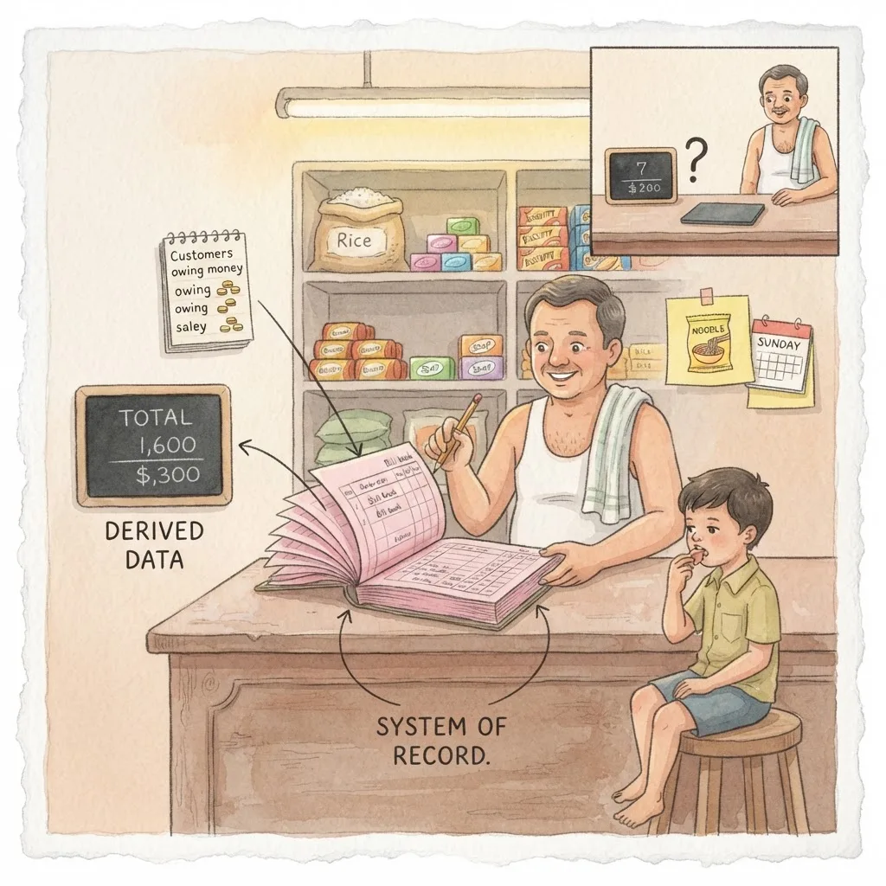
A kirana shop's bill book (the carbon copies of every sale) is the system of record. The owner's "today's total" on a slate, the list of "customers who owe money", and the note "Maggi sells fastest on Sundays" are all derived from it. Wipe the slate and you can recount from the bill book. Lose the bill book and the slate is just a number nobody can check. Where it breaks: in a computer, derived data can be rebuilt automatically and quickly; the shopkeeper's recount takes an evening.
Once you mark one store as the truth, every other store becomes a function of it: derived = f(source). If f has a bug, you fix f and recompute. If two copies disagree, you know which one wins. That one decision turns a tangle of "who updates whom?" into a one-way flow of data. Batch processing (this chapter) and stream processing (Ch.11) are two ways of computing f.
Parts I and II talked mostly about requests and queries with responses or results: you ask for something (or send an instruction), and some time later the system hopefully answers. Databases, caches, search indexes and web servers all work this way.
In these online systems (a browser requesting a page, a service calling a remote API) we usually assume a human triggered the request and is waiting. They shouldn't wait long, so we care a lot about response time (see "Describing performance" in Ch.1).
The web and the flood of HTTP/REST APIs have made request/response so common that we take it for granted. But it is not the only way to build systems. Kleppmann separates three types:
| Services (online) | Batch processing (offline) | Stream processing (near-real-time) | |
|---|---|---|---|
| How it runs | Waits for a request from a client; handles it as fast as possible; sends a response | Takes a large amount of input data, runs a job, produces output data | Consumes inputs and produces outputs (not answering requests), but works on events shortly after they happen |
| Who waits? | A user, usually | Normally nobody; jobs are often scheduled periodically (e.g. once a day) | Nobody directly; output appears soon |
| How long | Usually milliseconds (not a book figure) | A few minutes to several days | Continuously (delay usually seconds; not a book figure) |
| Main measure | Response time; availability matters (unreachable → user sees an error) | Throughput: time to crunch an input of a given size | Lower latency than the equivalent batch job |
| Input | One request | A fixed set of input data | Events as they arrive |
| Where | Parts I–II | This chapter | Ch.11 (also called nearline; it builds on batch) |
Batch processing is an important building block for reliable, scalable and maintainable applications. MapReduce, a batch algorithm published in 2004 (ref [1], Dean and Ghemawat), was called (perhaps over-enthusiastically) "the algorithm that makes Google so massively scalable" (ref [2]). It was later implemented in open-source systems including Hadoop, CouchDB and MongoDB.
But MapReduce is also in some ways a step backwards from more sophisticated parallel processing techniques built for data warehouses many years earlier (refs [3, 4]). Its importance is now declining (ref [5]), yet it is still worth understanding because it shows clearly why and how batch processing is useful.
Batch processing is very old. Long before programmable computers, punch-card tabulating machines such as the Hollerith machines used in the 1890 US Census did semi-mechanized batch processing to compute statistics from large inputs. And MapReduce looks uncannily like the electromechanical IBM card-sorting machines used widely for business data in the 1940s and 1950s. History repeats.
Plan of the chapter: MapReduce and several other batch algorithms and frameworks, and how modern systems use them. But it starts with standard Unix tools, because the ideas of the Unix philosophy carry over directly to large, mixed, distributed data systems.
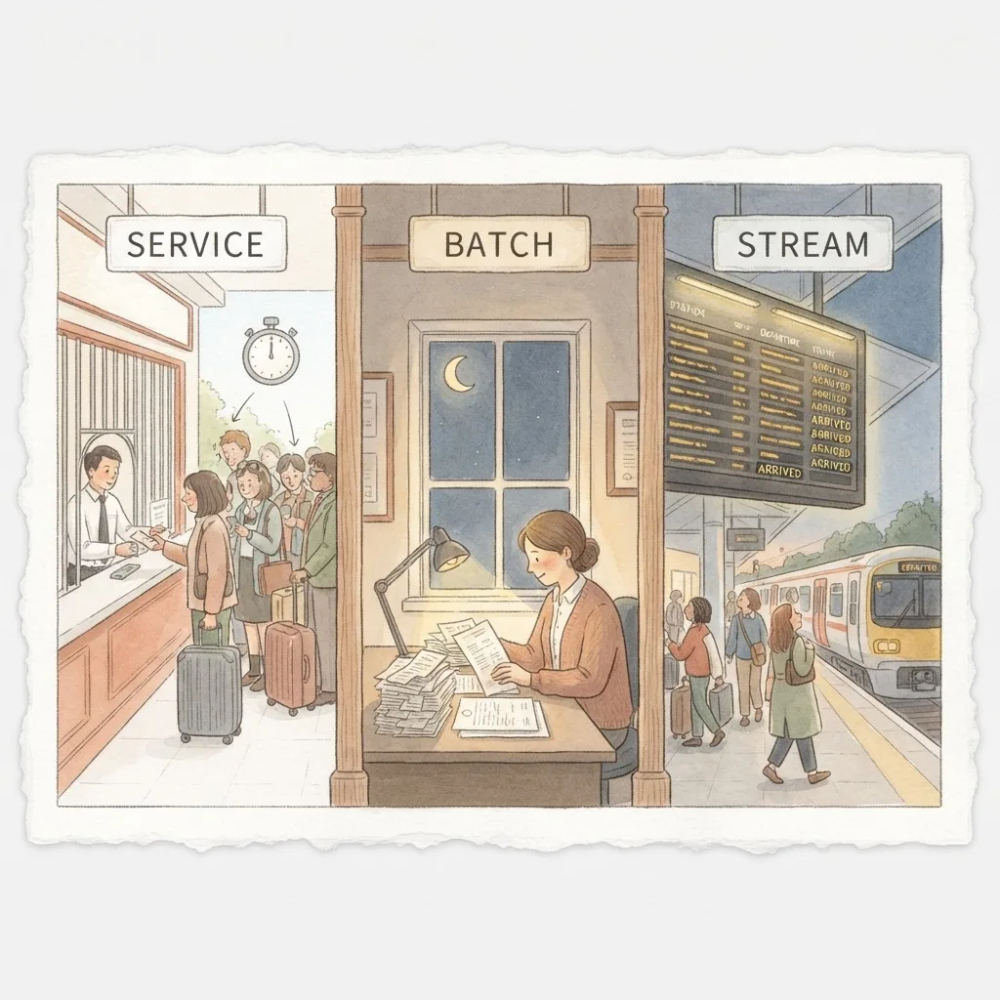
A railway station. The ticket counter is a service: one passenger at a time, and everyone in the queue cares how long it takes. The night-time accounts reconciliation of the whole day's tickets is a batch job: a big pile in, one report out, nobody standing at the window waiting. The live departure board that updates as trains move is stream processing. Where it breaks: a station clerk can't reconcile 10 TB of tickets; computers split that pile over many machines, which is what most of this chapter is about.
Response time and throughput pull in different directions. A service must answer each small request quickly, so it keeps indexes and avoids scanning. A batch job doesn't care about any single record; it wants to push the most bytes per second through the machine, so it reads files sequentially from start to end and avoids random lookups. That one difference explains most of the design choices later in the chapter.
Say a web server appends one line to a log file every time it serves a request. With the nginx default access-log format, one line looks like this (it is really one line; the book wraps it):
216.58.210.78 - - [27/Feb/2015:17:55:11 +0000] "GET /css/typography.css HTTP/1.1"
200 3377 "http://martin.kleppmann.com/" "Mozilla/5.0 (Macintosh; Intel Mac OS X
10_9_5) AppleWebKit/537.36 (KHTML, like Gecko) Chrome/40.0.2214.115 Safari/537.36"To read it you need the log format definition:
$remote_addr - $remote_user [$time_local] "$request"
$status $body_bytes_sent "$http_referer" "$http_user_agent"So this line says: on 27 February 2015 at 17:55:11 UTC, the server got a request for /css/typography.css from client IP 216.58.210.78. The user was not logged in, so $remote_user is a dash (-). The status was 200 (success) and the response was 3377 bytes. The file was embedded in the page http://martin.kleppmann.com/ and the browser was Chrome 40.
Each coloured piece is one field. The number shows which whitespace-separated field it is, which is what awk's $1, $7 … refer to in the next plate.
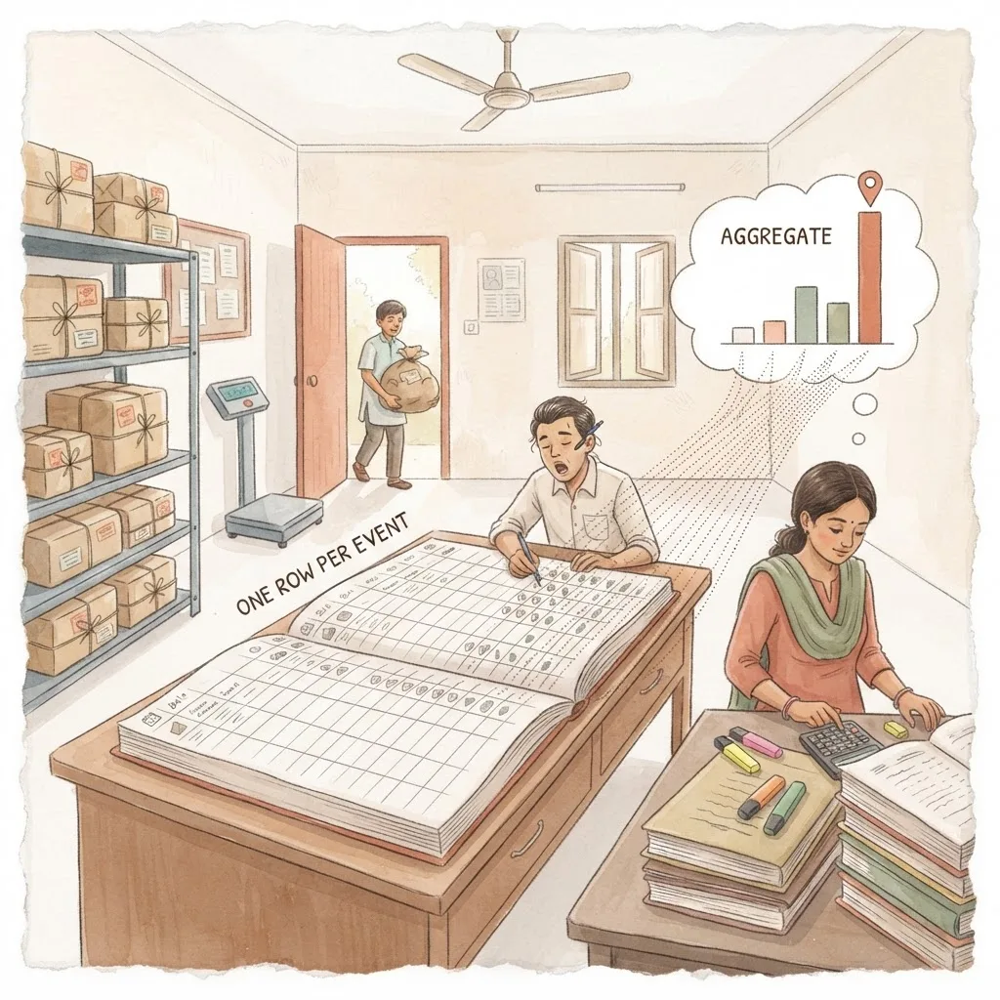
A courier company's delivery register: one row per parcel, with date, from, to, weight, status, signed by. Each row on its own is boring; the value comes when you count across thousands of rows ("which pin code gets most parcels?"). Where it breaks: a register has neat columns; a log line is just text with spaces, so tools must guess where fields start and end (plate 8 comes back to this).
A log file is append-only: the server only ever adds lines at the end and never edits old ones. That makes it a perfect batch input: it's a fixed pile of facts (an "event log"), and analysis never needs to change it, only read it.
Many tools can turn these logs into pretty traffic reports, but as an exercise, build one with basic Unix tools. To find the 5 most popular pages:
cat /var/log/nginx/access.log | # 1
awk '{print $7}' | # 2
sort | # 3
uniq -c | # 4
sort -r -n | # 5
head -n 5 # 6/css/typography.css).uniq drops repeated lines by checking whether two adjacent lines are the same. -c also prints a counter: for each distinct URL, how many times it appeared.-n) at the start of each line (the request count), in reverse (-r) order, biggest first.Footnote i: some people like to point out that cat is unnecessary (you could pass the file directly to awk). Kleppmann keeps it because the linear pipeline is clearer that way.
The output looks something like this (the book's real numbers from Martin's site):
4189 /favicon.ico
3631 /2013/05/24/improving-security-of-ssh-private-keys.html
2124 /2012/12/05/schema-evolution-in-avro-protocol-buffers-thrift.html
1369 /
915 /css/typography.cssIt looks obscure if you don't know Unix tools, but it is incredibly powerful: it processes gigabytes of logs in seconds, and it is easy to change. To leave CSS files out: change the awk argument to '$7 !~ /\.css$/ {print $7}'. To count top client IP addresses instead of pages: '{print $1}'. And so on.
The book doesn't teach Unix tools in detail, but they are very worth learning: surprisingly many analyses can be done in minutes with some combination of awk, sed, grep, sort, uniq and xargs, and they perform surprisingly well (ref [8]: "Command-line tools can be 235x faster than your Hadoop cluster").
A tiny 12-line log (made-up requests, only the URL field shown after step 2). Watch how sort puts equal URLs next to each other so that uniq -c only ever has to compare neighbours. Switch the awk program to see how small the change is.
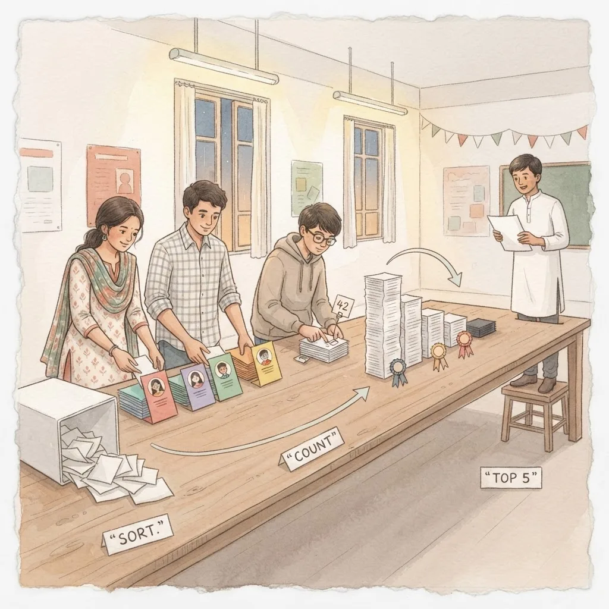
Counting votes on paper slips after a college election. You don't keep a tally sheet; instead you sort the slips into piles by name (sort), then count each pile (uniq -c), then line up the piles from tallest to shortest (sort -r -n) and announce the top 5 (head). Where it breaks: people sort slips by eye in parallel; sort on one machine is a single program, though GNU sort does use several CPU cores (plate 6).
Each program reads lines from its stdin and writes lines to its stdout; the shell's | connects them. All six programs run at the same time, each one handling lines as soon as the previous one emits them (except sort, which must read everything before it can output the first line). The "trick" that makes counting cheap is sorting first: once equal keys are adjacent, counting needs to remember only the current key and a counter.
Input URLs after step 2: /a /b /a /c /a /b. After sort: /a /a /a /b /b /c. uniq -c walks down: "/a, /a, /a" → 3 /a; "/b, /b" → 2 /b; "/c" → 1 /c. sort -r -n keeps that order (3, 2, 1). head -n 2 → 3 /a, 2 /b. Without the first sort, uniq -c on /a /b /a would wrongly print 1 /a, 1 /b, 1 /a.
Instead of chaining Unix commands, you could write a small program. In Ruby it might look like this:
counts = Hash.new(0) # 1
File.open('/var/log/nginx/access.log') do |file|
file.each do |line|
url = line.split[6] # 2
counts[url] += 1 # 3
end
end
top5 = counts.map{|url, count| [count, url] }.sort.reverse[0...5] # 4
top5.each{|count, url| puts "#{count} #{url}" } # 5counts is a hash table that keeps a counter for how many times each URL was seen. Counters start at zero.It isn't as short as the pipe chain but it's readable, and which you prefer is partly taste. Beyond syntax, though, there is a big difference in how they execute, which shows up when you run them on a large file. That is the next plate.
Six log lines go through the Ruby script. Watch the counts table: it gets a new row only for a URL it has never seen.
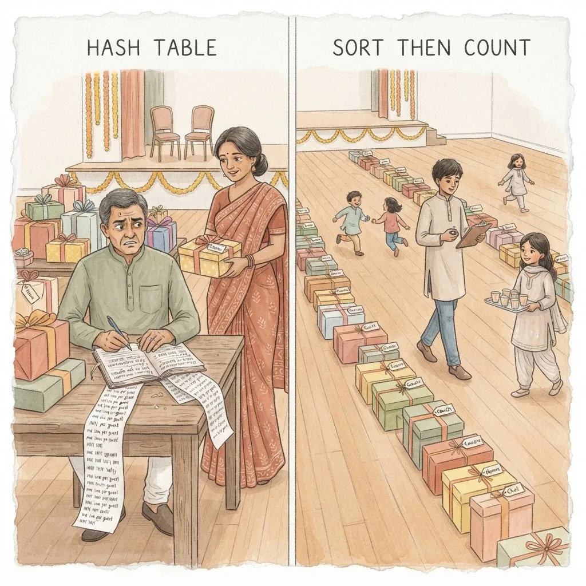
Two ways to count a wedding's gifts by giver. The Ruby way: keep a notebook with one line per guest and add a tick each time ("Sharma uncle: ||| "). The Unix way: line all gift boxes up in alphabetical order of the giver's name, then walk down the line counting runs. Where it breaks: the notebook works until it has more names than pages; the "line up the boxes" way works for any number of guests if you have floor space (disk).
The script's work is "random access into a table": each line jumps to some slot in memory. The pipeline's work is "sequential passes over a list". The first is faster when the table fits in RAM; the second keeps working when it doesn't.
The Ruby script keeps an in-memory hash table mapping each URL to its count. The Unix pipeline has no hash table; it sorts a list in which repeated URLs are just repeated.
Which is better? It depends on how many different URLs you have. For most small to mid-size websites, all distinct URLs plus a counter each probably fit in, say, 1 GB of memory. The working set of the job (the amount of memory it needs random access to) depends only on the number of distinct URLs: a million log entries for one URL still need just one URL plus one counter. If the working set is small enough, a hash table works fine, even on a laptop.
If the working set is larger than memory, sorting wins because it uses disks efficiently. It's the same principle as SSTables and LSM-trees (Ch.3): sort chunks of data in memory, write each chunk to disk as a segment file, then merge several sorted segments into one larger sorted file. Mergesort has sequential access patterns that perform well on disks. (Optimizing for sequential I/O was a recurring theme in Ch.3, and it comes back here.)
The sort utility in GNU Coreutils (Linux) automatically handles larger-than-memory data by spilling to disk, and automatically parallelizes sorting across CPU cores (ref [9]). So the simple Unix chain scales to large datasets without running out of memory. The bottleneck is likely to be how fast the input file can be read from disk.
Bytes per entry and RAM are your choices; numbers are illustrative, not from the book. Total log lines don't change the hash table size, only distinct URLs do.
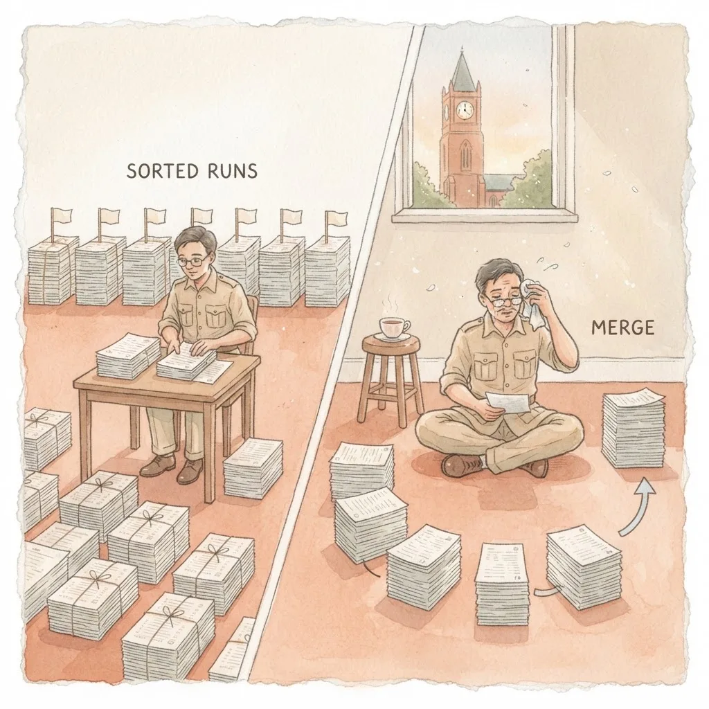
Sorting exam answer sheets for a whole university. Your table only holds 200 sheets. So you sort 200 at a time into a pile, put the pile on the floor, take the next 200, and so on. Then you merge the piles by repeatedly taking the top sheet with the smallest roll number. The table (RAM) never overflows. Where it breaks: a person merging 50 piles gets confused; a computer merges hundreds of runs easily, but reading many runs at once still costs disk seeks.
Hash tables need random access: any URL may hit any slot, so the table must live in RAM. If it overflows into disk/swap, each lookup becomes a slow disk seek. Sorting can be arranged so that every disk read and write is sequential (read a chunk, write a run, then stream-merge runs), and disks are fast at sequential I/O. This is why MapReduce (plate 13) is built around sorting.
10 million distinct URLs × 100 bytes each ≈ 1 GB hash table: fits on a 8 GB laptop. 500 million distinct URLs × 100 bytes ≈ 50 GB: doesn't fit; GNU sort with 8 GB of RAM would write ~7 sorted runs to disk and merge them.
It is no accident that the log analysis was easy: it uses one of Unix's key design ideas, which remains astonishingly relevant. The book looks at it closely to borrow ideas from it (ref [10]).
Doug McIlroy, the inventor of Unix pipes, described them in 1964 roughly like this: we should be able to connect programs like a garden hose, screwing in another segment whenever data needs to be massaged another way; that's how I/O should work too. The plumbing analogy stuck. Connecting programs with pipes became part of the Unix philosophy, a set of design principles popular with Unix developers and users. In 1978 it was described as (refs [12, 13]):
This approach (automation, rapid prototyping, incremental iteration, being friendly to experimentation, breaking big projects into manageable chunks) sounds a lot like today's Agile and DevOps movements. Surprisingly little has changed in four decades.
The sort tool is a great example of doing one thing well. It is arguably a better sort than most programming languages' standard libraries, which don't spill to disk and don't use multiple threads even when that would help. Yet sort is barely useful alone; it only becomes powerful combined with tools like uniq. Its author could easily have added uniq as a feature but resisted the temptation.
A Unix shell like bash lets us compose these small programs into surprisingly powerful jobs, even though they were written by different groups of people. What does Unix do to make this composability possible? The next three plates answer: a uniform interface, separating logic from wiring, and transparency.
The same six URLs. Each step adds one small tool to the pipe. No tool is changed; each new question is just a new combination.
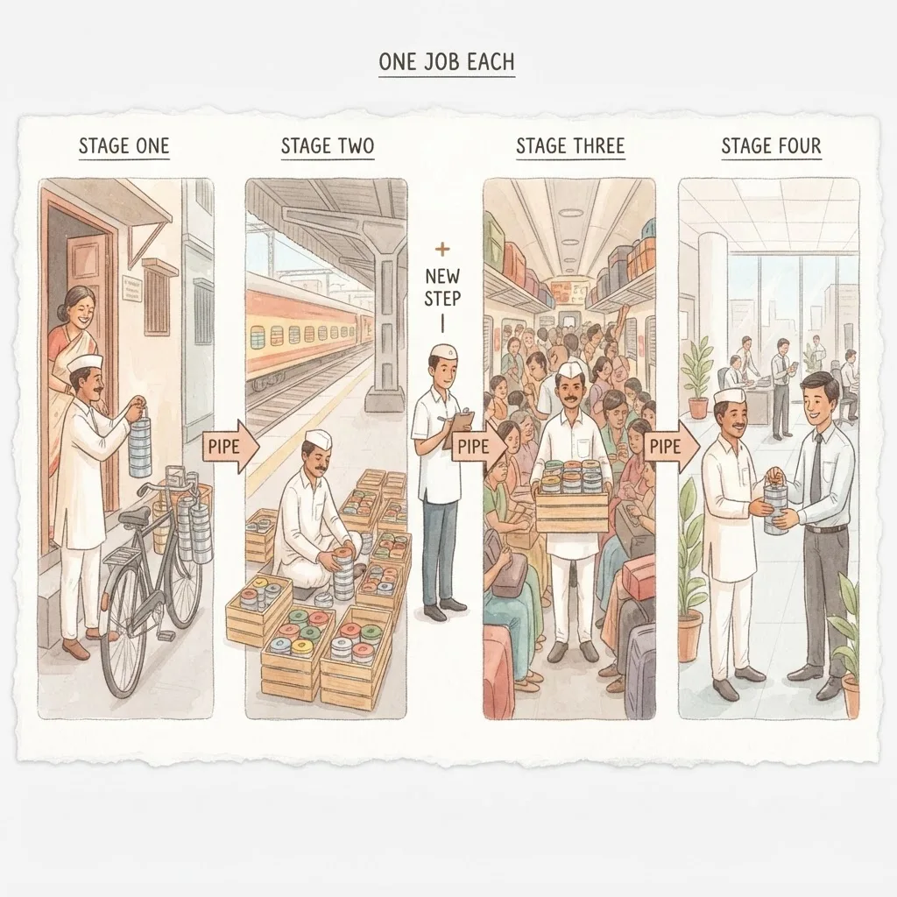
A Mumbai dabbawala chain. One person only collects tiffins from homes, another only sorts them at the station by colour code, another only carries them on the train, another only delivers to offices. None of them knows the whole route, and you can add a new step (say, a quality check) without retraining anyone. Where it breaks: dabbawalas agree on a painted code on the lid; programs need an agreed data format too, and that's the next plate.
"Do one thing well" keeps each tool small enough to be correct and fast. "Output becomes someone else's input" forces a plain, predictable output format. Together they make tools composable: n small tools give you roughly n×n useful combinations without anyone writing new code.
If one program's output is to become another's input, they must use the same data format: a compatible interface. If you want to connect any program's output to any program's input, all programs must share the same input/output interface.
In Unix that interface is a file (more precisely, a file descriptor). A file is just an ordered sequence of bytes. Because that is so simple, many different things can share it: an actual file on disk, a channel to another process (Unix socket, stdin, stdout), a device driver (say /dev/audio or /dev/lp0), a socket for a TCP connection, and so on. It's easy to take for granted, but it's remarkable that such different things share one interface and can be plugged together.
Footnote ii: another uniform interface is URLs and HTTP, the foundations of the web. A URL identifies a resource on a website, and you can link to any URL from any other site. A browser user can jump seamlessly between websites run by totally unrelated organizations. Obvious today, but a key insight behind the web's success.
By convention, many (not all) Unix programs treat the bytes as ASCII text. The log example relied on this: awk, sort, uniq and head all treat input as a list of records separated by \n (newline, ASCII 0x0A). The choice of \n is arbitrary; arguably the ASCII record separator 0x1E would be better since it was made for this (ref [14]). But because all these programs agree on the same separator, they interoperate.
Parsing each record (a line) is vaguer. Unix tools often split a line into fields by whitespace or tab, but CSV (comma-separated), pipe-separated and other encodings are used too. Even a simple tool like xargs has half a dozen options for how to parse its input.
The uniform interface of ASCII text mostly works but isn't beautiful: the example used {print $7} to get the URL, which isn't very readable. Ideally it would be something like {print $request_url}. The book returns to this idea later (structured formats like Avro and Parquet, plate 29).
Even so, decades later, Unix's uniform interface is still remarkable. Few pieces of software compose as well: you can't easily pipe your email account and your online shopping history through a custom analysis tool into a spreadsheet and post the results to a social network or wiki. Today, programs that work together as smoothly as Unix tools are the exception, not the norm. Even databases with the same data model often make it hard to move data from one to another. This leads to balkanization of data: data split into isolated, unconnected islands.
The standard Indian 3-pin plug. A mixer, a phone charger and a table fan are completely different machines, but they all fit any wall socket, so you can plug anything anywhere. Where it breaks: the plug only guarantees electricity flows; it says nothing about voltage needs. In the same way, "bytes separated by \n" guarantees lines flow, but each tool still has to guess how to split a line into fields.
A uniform interface removes the n×n problem: instead of writing a converter between every pair of programs, every program speaks one format. The price is that the format is very low-level (bytes, maybe lines), so meaning (which field is the URL?) is left to convention.
Unix tools also use standard input (stdin) and standard output (stdout). If you don't say otherwise, stdin comes from the keyboard and stdout goes to the screen. But you can take input from a file and/or redirect output to a file. Pipes attach one process's stdout to another's stdin, using a small in-memory buffer and without writing the whole intermediate stream to disk.
A program can still read and write files directly if needed, but Unix works best when a program doesn't worry about file paths and just uses stdin and stdout. Then the shell user can wire up input and output however they want; the program neither knows nor cares. This is a form of loose coupling, late binding (ref [15]) or inversion of control (ref [16]). Separating the I/O wiring from the program logic makes it easier to compose small tools into bigger systems.
You can write your own programs and mix them with the OS tools: just read from stdin and write to stdout. In the log example, you could write a tool that turns user-agent strings into sensible browser identifiers, or one that turns IP addresses into country codes, and plug it into the pipeline. sort doesn't care whether it talks to part of the OS or to your program.
Limits: programs that need multiple inputs or outputs are possible but tricky. You can't pipe a program's output into a network connection (refs [17, 18]). Footnote iii: except by using a separate tool such as netcat or curl. Unix started out trying to represent everything as files, but the BSD sockets API broke that convention. The research operating systems Plan 9 and Inferno are more consistent: they represent a TCP connection as a file in /net/tcp.
If a program opens files itself, starts a subprocess, or opens a network connection, that I/O is wired up by the program itself. It can still be configurable (e.g. command-line options), but you lose the flexibility of wiring things in the shell.
The middle box is the same program every time. Only the shell wiring changes.
A mixer-grinder motor. The motor doesn't know whether you attached the chutney jar, the dry-grinding jar or the juicer; you choose the attachment (wiring), the motor just spins (logic). Where it breaks: a mixer has one input and one output; a program that needs two inputs (say, a join of two files) doesn't fit the stdin/stdout shape well, which is exactly the limit the book mentions.
The shell creates the pipes and file descriptors before starting the program and hands them over as fd 0 (stdin) and fd 1 (stdout). The program just reads fd 0 and writes fd 1. Because the decision "where does data go?" is made outside the program, the same binary can be reused in endless pipelines. MapReduce copies this: a job's input and output directories are configuration, not code (plate 29).
Part of Unix tools' success is how easy they make it to see what is going on:
less, and check it has the expected form. Great for debugging.So even though Unix tools are blunt and simple compared to a relational database's query optimizer, they are amazingly useful, especially for experimentation.
Their biggest limitation: they run on a single machine. That's where tools like Hadoop come in.
Cut the pipeline after any command and pipe it into less. The input file stays untouched every time. (Uses the same modelled 12-line log as plate 4.)
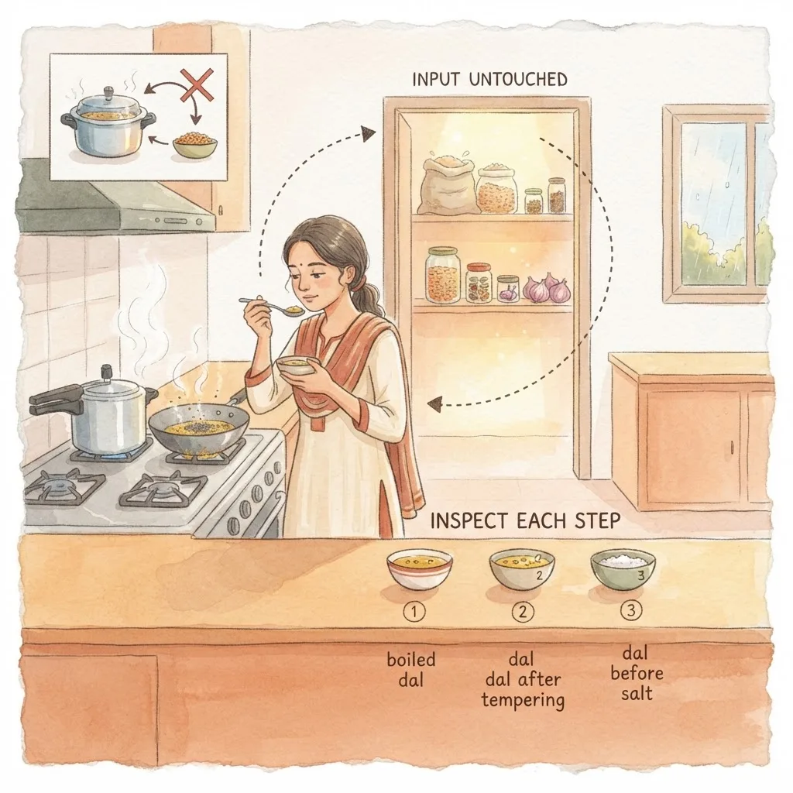
Cooking from a recipe while tasting at each step. You can taste the dal after tempering, before adding salt, and the raw ingredients in the store-room are still there if you want to start over. Where it breaks: once the dal is cooked you can't un-cook it; but in Unix, the input file is never "cooked", so you can always start over.
Immutability is what makes experiments cheap. If running a command could change the input, every try would be risky and you'd need backups. Because nothing is destroyed, the cost of a mistake is only the time to run again. Plate 29 shows MapReduce keeping the same property at datacenter scale.
MapReduce is a bit like Unix tools, but distributed across potentially thousands of machines. Like Unix tools it's blunt, brute-force, but surprisingly effective. A single MapReduce job is comparable to a single Unix process: it takes one or more inputs and produces one or more outputs.
Like most Unix tools, a MapReduce job normally does not modify its input and has no side-effects other than producing output. Output files are written once, sequentially (no part of a file is changed once written).
Where Unix tools use stdin and stdout, MapReduce jobs read and write files on a distributed filesystem. In Hadoop's implementation that filesystem is HDFS (Hadoop Distributed File System), an open-source re-implementation of Google's GFS (Google File System) (ref [19]).
Shared-nothing contrasts with NAS (Network Attached Storage) and SAN (Storage Area Network), where storage is provided by a centralized storage appliance, often with custom hardware and special networks like Fibre Channel. (In SAN/NAS, machines may still have local disks, but those are used only by the local OS, not as shared storage.)
HDFS has scaled well: at the time of writing, the biggest deployments run on tens of thousands of machines with combined storage of hundreds of petabytes (ref [21]). That's viable because storing and accessing data on HDFS with commodity hardware and open-source software is much cheaper than the same capacity on a dedicated storage appliance (ref [22]).
Other distributed filesystems exist, like GlusterFS and the Quantcast File System (QFS). Object stores such as Amazon S3, Azure Blob Storage and OpenStack Swift are similar in many ways. Footnote iv: one difference is that HDFS lets you schedule computation on the machine that stores a copy of a file, while object stores usually keep storage and computation separate. Reading from local disk helps if network bandwidth is the bottleneck. But with erasure coding that locality advantage is lost, because data from several machines must be combined to rebuild the file. The chapter uses HDFS as the running example, but the principles apply to any distributed filesystem.
One file of 4 blocks (A–D), each block stored on 3 of 5 machines (replication factor 3). The NameNode only keeps the map "which block lives where". Kill machines and see whether every block is still readable.
| HDFS (shared-nothing) | NAS / SAN | Object store (S3 etc.) | |
|---|---|---|---|
| Where bytes live | Local disks of ordinary machines | Central storage appliance | A storage service |
| Hardware | Commodity + normal network | Custom, e.g. Fibre Channel | Provider's |
| Run code next to data? | Yes (data locality) | No | Usually no; storage and compute separate |
| Redundancy | Replicas or erasure coding over the network | Inside the appliance (RAID-like) | Inside the service |
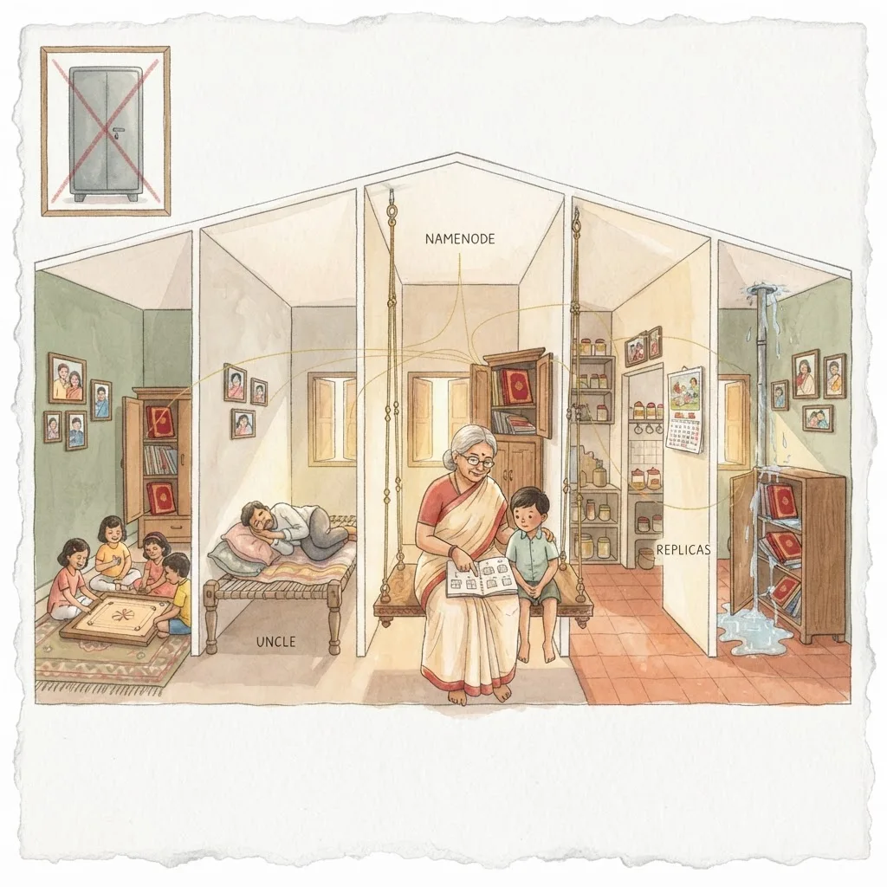
A joint family storing photo albums. Instead of one big steel almirah (SAN appliance) in the main room, every room has a small cupboard, and each album has photocopies in three different rooms. Grandma's notebook (the NameNode) lists which album copy is in which room. If one room floods, the other copies survive. Where it breaks: if Grandma's notebook is lost, nobody knows where anything is, which is why real HDFS deployments protect the NameNode carefully (the book doesn't go into that).
Files are split into large blocks; each block is an independent unit stored and replicated on different machines. Reading a file = asking the NameNode for block locations, then reading blocks directly from DataNodes in parallel. Because each block sits on a normal machine that also has CPUs, the scheduler can run the computation on the machine that holds the block (plate 13).
Today many batch systems use cloud object storage (S3, GCS, Azure Blob) as their main "filesystem" and give up data locality in exchange for separating storage from compute; fast datacenter networks made that trade cheaper. HDFS still exists but is less dominant than when this edition was written.
MapReduce is a programming framework for writing code that processes large datasets in a distributed filesystem like HDFS. Easiest way to understand it: compare it with the log-analysis pipeline (plate 4). The pattern is very similar:
\n is the record separator).awk '{print $7}' extracts the URL ($7) as key and leaves the value empty.sort.uniq -c counts adjacent records with the same key.Those four steps are one MapReduce job. You write two callback functions (see also "MapReduce querying" in Ch.2):
Called once for every input record. Its job: extract the key and value. In the log example, awk '{print $7}' is effectively the mapper. Here one record gives one pair, but a mapper may output zero or more key-value pairs per record.
The framework collects all pairs with the same key and calls the reducer with the key and an iterator over all its values. In the log example, uniq -c is effectively the reducer. The reducer can produce output records (e.g. the count per URL).
Step 3, the sort, is implicit: you don't write it, because mapper output is always sorted before it reaches the reducer. This sorting step is arguably the most important aspect of MapReduce.
The log example had a second sort (step 5, ranking by count). In MapReduce, a second sorting stage means a second MapReduce job that uses the first job's output as input. Seen this way: the mapper prepares data into a form suitable for sorting, and the reducer processes data that has been sorted.
| Unix pipeline | MapReduce |
|---|---|
cat access.log | Framework reads input files from HDFS, splits into records |
awk '{print $7}' | Mapper: record → (url, ·) |
sort | Implicit sort/shuffle by key (framework) |
uniq -c | Reducer: (url, [·,·,·]) → (url, 3) |
sort -r -n | head -n 5 | A second job: mapper makes count the key, reducer takes top 5 |
// word-count style sketch in pseudo-Java (shape of Hadoop's API, simplified; not from the book)
map(lineNumber, line): // called once per record
url = line.split(" ")[6]
emit(url, 1)
reduce(url, counts): // called once per distinct key, values already grouped
emit(url, sum(counts))Follow six records through read → map → (free) sort → reduce. You write only the map and reduce functions.
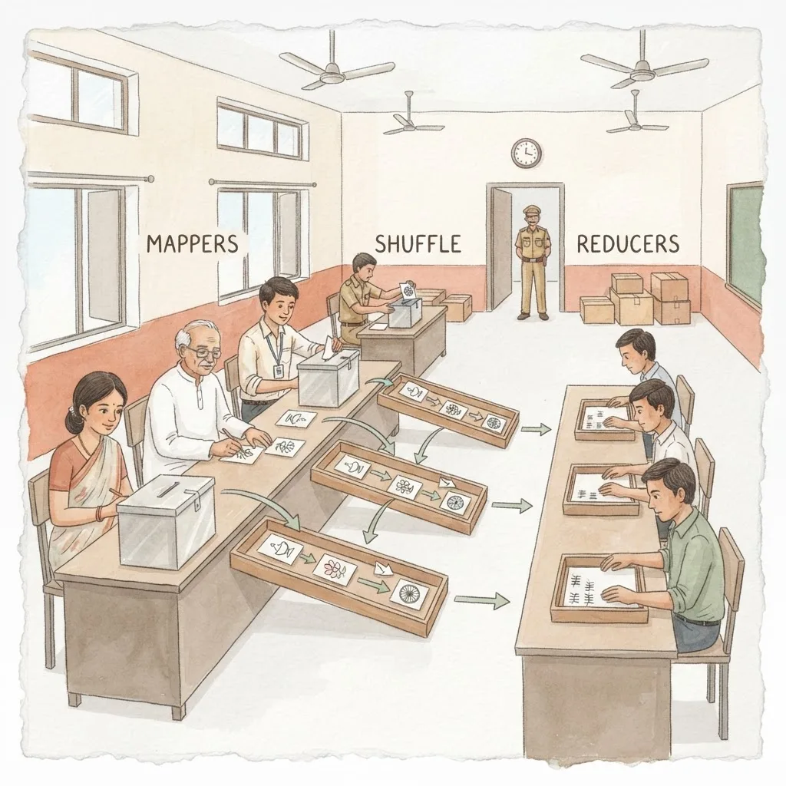
An election counting centre. Mappers are the clerks who open each ballot box and write one slip per vote saying only the candidate's name (key). The framework is the system of trays that routes every slip for the same candidate into one tray, sorted. Reducers are the counters, one per tray, who just count slips. No counter ever needs to see another candidate's tray. Where it breaks: in an election everyone counts at once; in MapReduce, reducers can't finish until every mapper is done, because a late mapper might still produce slips for their tray.
Splitting the work into "per record" (map) and "per key" (reduce) is what makes parallelism automatic. A mapper only needs one record, so any machine can run it. A reducer only needs one key's values, so different keys can go to different machines. The framework owns everything in between: moving and sorting the data.
The main difference from Unix pipelines: MapReduce can parallelize a computation across many machines without you writing code for the parallelism. The map and reduce functions handle one record at a time and don't know where input comes from or output goes, so the framework can handle moving data between machines.
You can use standard Unix tools as mappers and reducers in a distributed computation (ref [25], a blog post about Joyent's Manta; the book doesn't name it), but usually they are functions in a normal programming language. In Hadoop MapReduce, mapper and reducer are each a Java class implementing an interface. In MongoDB and CouchDB they are JavaScript functions.
Parallelism comes from partitioning (Ch.6): the job's input is usually a directory in HDFS, and each file or file block in it is a separate partition processed by a separate map task (m1, m2, m3 in Figure 10-1).
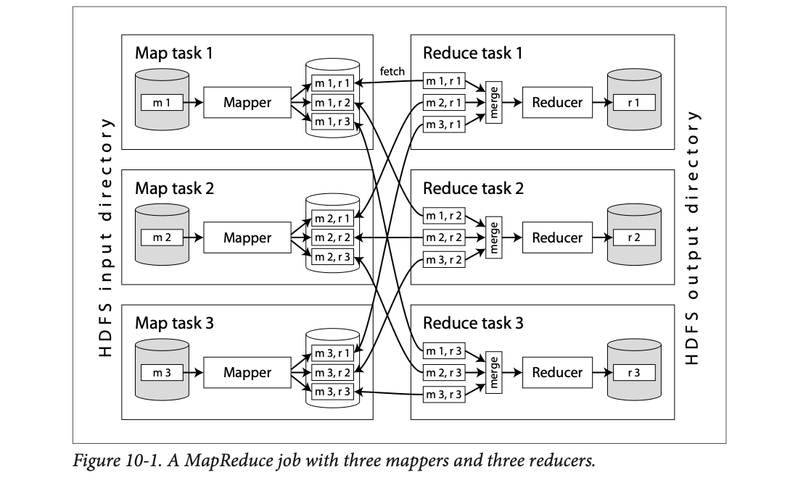
Left column = map side; right column = reduce side. Each map task reads one block from the HDFS input directory (grey cylinder m1/m2/m3), runs the Mapper, and writes three small files on its own local disk, one per reducer: "m1, r1" means "the part of mapper 1's output that belongs to reducer 1". The crossing arrows are the fetch: reduce task 1 pulls "m1,r1", "m2,r1" and "m3,r1" from the three mappers. It merges them (keeping sort order), runs the Reducer, and writes its output file r1 to the HDFS output directory. Every mapper talks to every reducer: 3 × 3 = 9 transfers.
Each input file is typically hundreds of megabytes. The MapReduce scheduler (not drawn) tries to run each mapper on a machine that stores a replica of its input, if that machine has spare RAM and CPU (ref [26]). This is putting the computation near the data (ref [27]): it saves copying input over the network, reducing network load and increasing locality.
Usually the application code isn't yet on the chosen machine, so the framework first copies the code (e.g. JAR files) there. Then it starts the map task, reads the input file, and passes one record at a time to the mapper callback. The mapper outputs key-value pairs.
The reduce side is partitioned too. The number of map tasks = number of input file blocks; the number of reduce tasks is configured by the job author (and can differ). To make sure all pairs with the same key reach the same reducer, the framework uses a hash of the key to pick the reduce task (see "Partitioning by hash of key", Ch.6).
The pairs must be sorted, but the data is likely too big for one machine to sort normally. So sorting happens in stages:
Count page views per URL. 3 input blocks (one per mapper), each with 4 log records. Pick how many reducers. The colour of each pair shows which reducer its key hashes to (a toy hash: sum of character code × position, mod R).
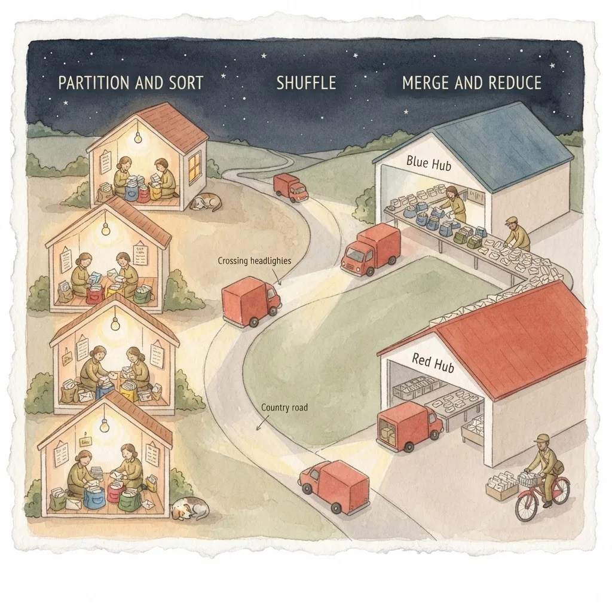
India Post sorting at night. Each local post office (mapper) bags its letters by destination sorting hub (partition by hash of PIN code) and puts each bag in PIN order (sort). Trucks from each hub come and collect their bag from every office (fetch). At the hub, the bags are merged into one ordered stream (merge) and a postman delivers all letters for one address at once (reduce). Where it breaks: the post office starts trucks as soon as some bags are ready; in classic MapReduce a reducer can only start reducing after all mappers finish, because the merge needs every mapper's piece of its partition.
The hash decides where a key goes; the sort decides in what order it arrives. Hashing guarantees one reducer sees all values of a key; sorting lets that reducer process keys one at a time with tiny memory. Writing mapper output to local disk (not HDFS) is a middle ground: cheap, but if that machine dies before reducers fetch, the map task is re-run.
Job with 1 TB input in 128 MB blocks → about 8,000 map tasks (1,000,000 MB / 128). If the author sets 200 reducers, each mapper writes 200 small sorted files, and the shuffle performs up to 8,000 × 200 = 1.6 million fetches. (Block size and reducer count here are modelled, not from the book; the book says only "hundreds of megabytes".)
A single MapReduce job can solve only limited problems. In the log example, one job can count page views per URL but not find the most popular URLs, because that needs a second round of sorting.
So jobs are commonly chained into workflows: one job's output is the next job's input. Hadoop MapReduce has no special support for workflows; chaining is done implicitly by directory name. Job 1 is configured to write to some HDFS directory, and job 2 is configured to read that same directory. From the framework's point of view they're two independent jobs.
Chained MapReduce jobs are therefore less like Unix pipes (which pass data directly using a small in-memory buffer) and more like a sequence of commands where each writes to a temporary file and the next reads it. This has pros and cons, discussed in plate 35 ("Materialization of intermediate state").
A batch job's output is valid only when the job completes successfully (MapReduce discards partial output of a failed job). So a job can only start when the jobs that produce its input directories have all finished successfully. To manage these dependencies, people built workflow schedulers for Hadoop: Oozie, Azkaban, Luigi, Airflow and Pinball (ref [28]).
They also have management features useful for large collections of batch jobs. Workflows of 50 to 100 MapReduce jobs are common when building recommendation systems (ref [29], LinkedIn), and in a large organization many teams run jobs that read each other's output. Tool support matters for such complex dataflows.
Higher-level tools for Hadoop, such as Pig, Hive, Cascading, Crunch and FlumeJava, also set up workflows of several MapReduce stages that are wired together automatically.
Four jobs connected by HDFS directories. Make one fail and see what the scheduler does with the jobs downstream.
A school exam result process. Teachers grade papers and leave marks in the "graded" tray (job 1 output directory). The office tabulates from that tray into the "marksheets" tray (job 2). The principal signs from the "marksheets" tray (job 3). Nobody passes papers hand to hand; they only agree on which tray to use, and the head clerk (scheduler) won't let the office start until every teacher has finished. Where it breaks: a real office might start on whatever papers are ready; MapReduce must wait for the whole previous job, because partial output is not valid.
The framework only knows "job reads directory X, writes directory Y". The workflow is a DAG (directed acyclic graph) of jobs that lives in the scheduler, not in MapReduce. Because outputs are only published on success, a downstream job never sees half-written data.
Of the schedulers named, Apache Airflow became the most widely used general-purpose workflow scheduler; newer tools like Dagster and Prefect follow the same "DAG of tasks with dependencies" idea.
Ch.2 discussed joins in terms of data models and query languages, but not how joins are actually executed. Now we pick up that thread.
In many datasets one record has an association with another: a foreign key (relational model), a document reference (document model), or an edge (graph model). A join is needed whenever code must access records on both sides of that association (the record holding the reference and the record referenced). Denormalization can reduce the need for joins but generally can't remove them entirely.
Footnote v: the joins in this book are generally equi-joins, the most common kind: a record is associated with records that have an identical value in some field (e.g. an ID). Some databases support more general joins (e.g. using less-than instead of equality), but the book doesn't cover them.
In a database, a query touching few records would normally use an index to find them quickly (Ch.3), and a join might need several index lookups. But MapReduce has no concept of indexes, at least not in the usual sense.
Given a set of files, a MapReduce job reads the entire content of all of them. A database would call that a full table scan. For reading a few records, a full scan is outrageously expensive compared to an index lookup. But in analytic queries ("Transaction Processing or Analytics?", Ch.3) it's common to aggregate over a large number of records. Then scanning everything is quite reasonable, especially when spread across many machines.
So in batch processing, "join" means resolving all occurrences of some association within a dataset: e.g. processing data for all users at once, not looking up one user (which an index would do far better).
The same two tables, two different questions. The bars show how many reads (then how much time) each approach needs.
Finding one student's marks: you open the register at their roll number (index). Making the whole school's report cards: you don't look up students one by one; you go through the full marks register and the full student list together, in roll-number order, start to finish. Where it breaks: a teacher can flip pages anywhere instantly; on disk, "flipping" (random access) is what's slow, which is why batch prefers going start to finish.
An index lookup costs roughly one random read per record. If you need every record anyway, a million random reads are far slower than one sequential scan of the same data. Batch joins accept "read everything" and make it fast by reading sequentially and in parallel.
A typical batch join is in Figure 10-2. On the left: a log of events describing what logged-in users did on a website (activity events or clickstream data). On the right: a database of users. Think of it as part of a star schema (Ch.3): the event log is the fact table and the user database is one of the dimensions.
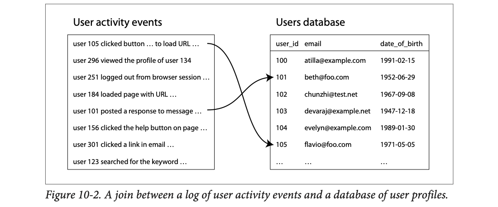
Each event on the left carries only a user ID (105, 296, 251, …). The table on the right has the full profile: user_id, email, date_of_birth (100 atilla@example.com 1991-02-15 … 105 flavio@foo.com 1971-05-05). The curved arrows show the join: the event "user 105 clicked button…" must be matched to row 105, "user 101 posted a response…" to row 101. The arrows cross because the log is in time order, not in user-ID order: matching them means jumping around, which is exactly what batch processing wants to avoid.
An analytics task may need to correlate activity with profile information: e.g. if the profile has age or date of birth, find which pages are most popular with which age groups. But activity events contain only the user ID, not the profile. Embedding the profile in every event would most likely be too wasteful. So events must be joined with the user database.
Simplest implementation: go through the events one by one and query the user database (on a remote server) for every user ID. Possible, but very poor performance:
For good batch throughput, computation must be local to one machine as much as possible. Random-access network requests for every record are too slow. And querying a remote database makes the job non-deterministic, because that database's data might change while you run.
Better: take a copy of the user database (e.g. extracted from a backup with an ETL (extract–transform–load) process, see "Data warehousing" in Ch.3) and put it in the same distributed filesystem as the activity log. Now users are one set of files in HDFS and activity events another, and MapReduce can bring the relevant records together and process them efficiently.
Rough time to join N events. Remote: one network round trip per event, limited by how many queries the DB tolerates in parallel. Local: sequential scan speed of the cluster. All numbers are illustrative.
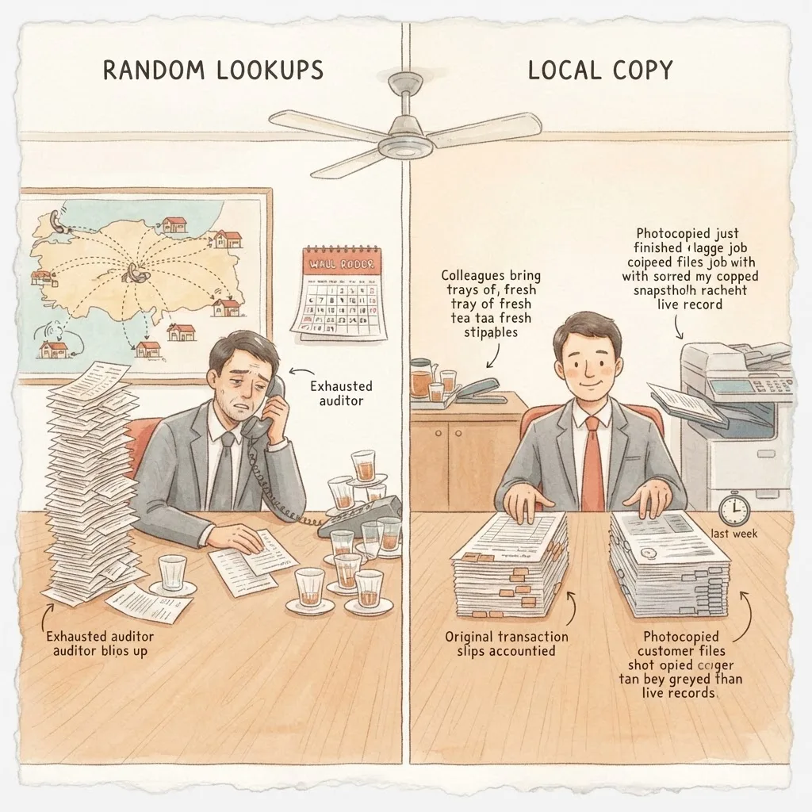
A bank auditor checking every transaction of the year against customer KYC files. Option 1: for each of 10 lakh transactions, phone the branch and ask for that customer's file. Option 2: get a photocopy of all KYC files once, bring them to the audit room, and sort both piles by account number. Where it breaks: the photocopy can be slightly out of date; for batch analytics that's fine (and even good, because the result is repeatable), but not for something like approving a payment right now.
Two reasons to copy the database into HDFS: speed (sequential local reads instead of a network round-trip per record) and determinism (a frozen snapshot means re-running the job gives the same answer). Determinism is what makes retries and bug fixes safe later (plates 29, 37).
The mapper's job is to extract a key and value from each record. For Figure 10-2, the key is the user ID. One set of mappers reads the activity events (key = user ID, value = the event). Another set reads the user database (key = user ID, value = the user's date of birth). Figure 10-3 shows this.
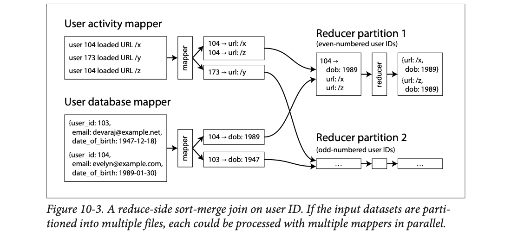
Two mappers on the left, one per input. The activity mapper emits 104 → url:/x, 104 → url:/z, 173 → url:/y. The user-database mapper emits 104 → dob:1989 and 103 → dob:1947. The arrows on the right are the shuffle: even user IDs (104) go to reducer partition 1; odd IDs (103, 173) go to partition 2. In partition 1 everything about user 104 has arrived together, dob first, then the URLs. The reducer outputs one joined record per click: {url: /x, dob: 1989}, {url: /z, dob: 1989}. Partition 2's work is drawn as "…".
When the framework partitions mapper output by key and sorts it, all activity events and the user record with the same user ID become adjacent in the reducer's input. MapReduce can even arrange the sort so the reducer always sees the user-database record first, followed by the activity events in timestamp order. This is a secondary sort (ref [26]).
The join logic is then easy. The reduce function is called once per user ID. Thanks to the secondary sort, the first value is the date-of-birth record. The reducer stores the date of birth in a local variable, then iterates over that user's activity events, outputting pairs of viewed-url and viewer-age-in-years. Later MapReduce jobs could compute the distribution of viewer ages for each URL and cluster by age group.
Since the reducer processes all records for one user ID in one go, it needs only one user record in memory at a time and never makes a network request. This algorithm is a sort-merge join: mapper output is sorted by key, and reducers merge the sorted lists from both sides.
// reducer for the join (sketch, not from the book)
reduce(userId, values): // values: dob record first (secondary sort), then events by time
dob = null
for v in values:
if v.type == "user": dob = v.dateOfBirth
else if dob != null: emit(v.url, ageInYears(dob, v.timestamp))
// if dob is null: no profile for this user → inner join drops the event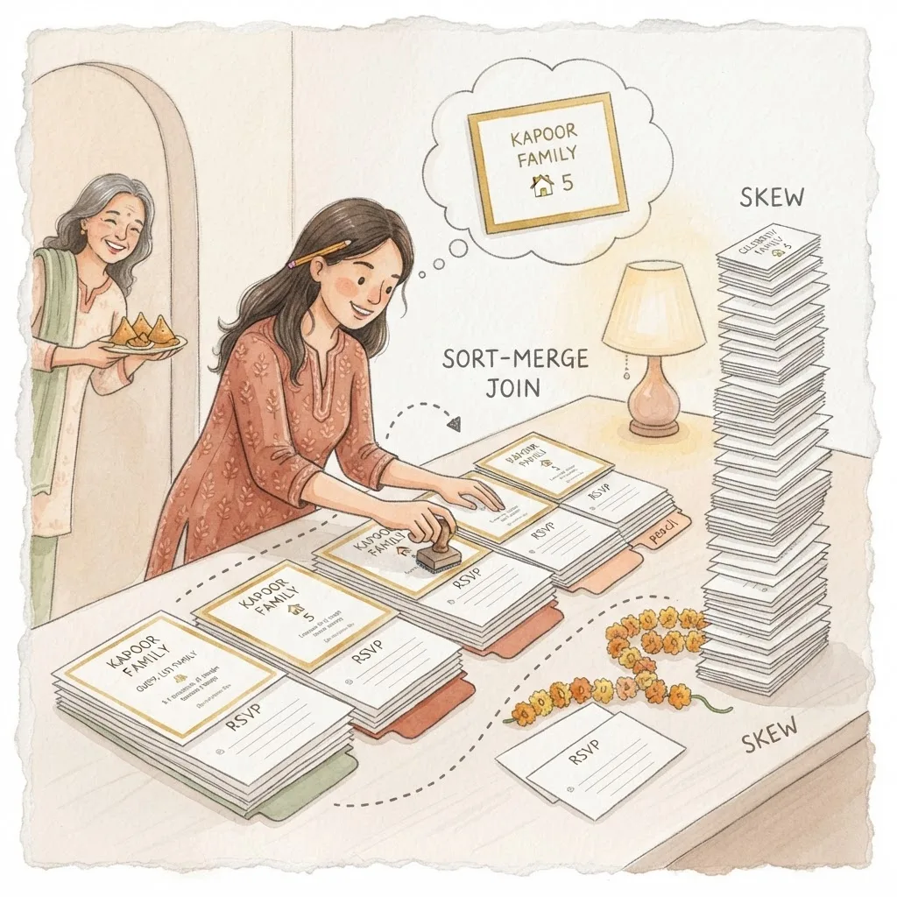
Matching wedding RSVPs to the guest list. Put both piles in surname order, with each family's guest-list card on top of their RSVP cards. Now one walk down the combined pile is enough: read the guest card ("Iyer family, 4 people, Chennai"), keep it in your head, and stamp that info on each Iyer RSVP below it until the surname changes. Where it breaks: you hold one family in your head at a time; if one "family" had a million RSVPs (a celebrity), that one walk would take forever, which is plate 20.
The secondary sort works by making the sort key a pair: (userId, tag) where tag puts the user record before events (and events by timestamp), while partitioning and grouping use only userId. So all values for one user still go to one reduce call, but in a guaranteed order. That's why the reducer needs to remember just one variable.
The mappers and the sort have made sure all data needed to join one user ID is in one place: a single call to the reduce function. With everything lined up in advance, the reducer can be a fairly simple, single-threaded piece of code that churns through records with high throughput and low memory.
One way to see this architecture: mappers "send messages" to reducers. When a mapper emits a key-value pair, the key is like a destination address. It's just an arbitrary string, not a physical address like an IP and port, but it acts like one: all pairs with the same key are delivered to the same destination (one reduce call).
The MapReduce model has separated the physical network communication (getting data to the right machine) from the application logic (processing data once you have it). Compare typical database use, where a fetch from the database often happens deep inside application code (ref [36]). Because MapReduce handles all network communication, it also shields application code from partial failures, such as another node crashing: MapReduce transparently retries failed tasks without affecting the application logic.
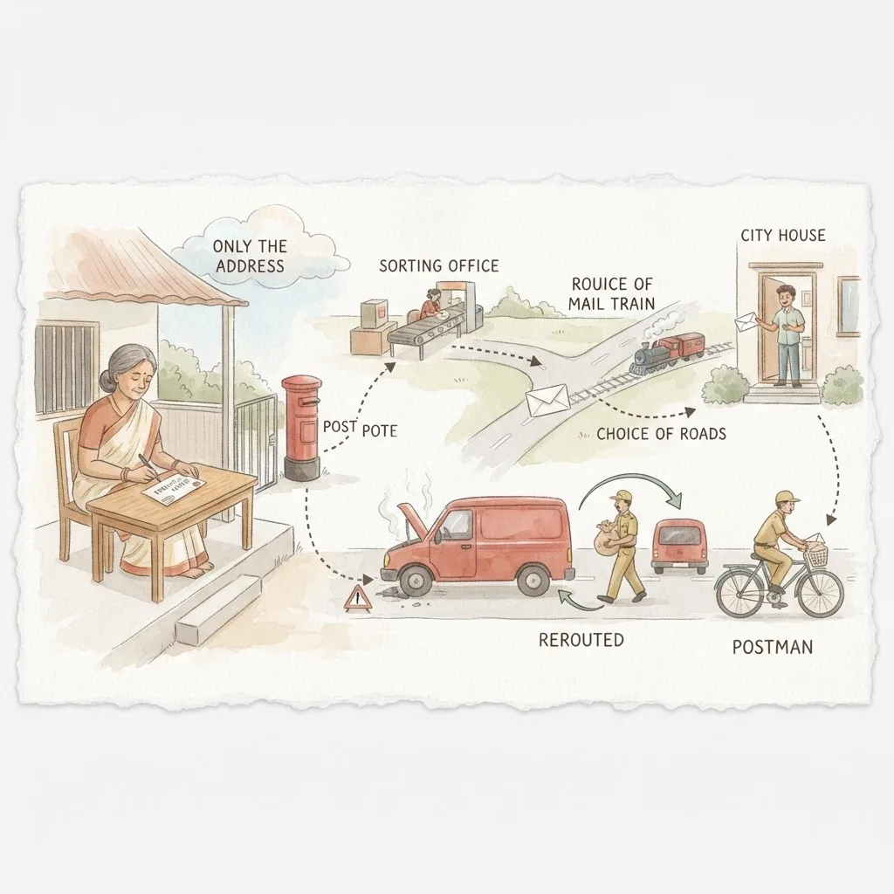
Writing a PIN code on a letter. You don't care which truck, train or sorting machine carries it; you only write the address. India Post handles routing, and if one van breaks down, the letters go in another van. Where it breaks: a letter can be lost; MapReduce guarantees every pair reaches its reducer (by re-running failed tasks), so in this respect it's more reliable than the post.
Because user code never opens a socket, the framework is free to decide which machine runs what, retry any piece, and discard output from failed attempts. User code that called the network itself (e.g. a database query inside the mapper) would break all three freedoms: retries would repeat side-effects and results would depend on timing.
Besides joins, another common use of "bring related data to the same place" is grouping records by a key, as in SQL's GROUP BY. All records with the same key form a group, and the next step is usually some aggregation within each group:
COUNT(*)),SUM(fieldname)),Simplest implementation in MapReduce: make the mappers emit pairs whose key is the grouping key. Partitioning and sorting then bring all records with the same key to the same reducer. So grouping and joining look very similar on MapReduce.
Another use of grouping: collecting all activity events for a particular user session to find the sequence of actions the user took, called sessionization (ref [37]). Uses: working out whether users shown a new version of your website are more likely to buy than those shown the old one (A/B testing), or whether a marketing activity is worthwhile.
With several web servers, one user's events are most likely scattered across different servers' log files. Sessionization uses a session cookie, user ID or similar identifier as the grouping key, bringing one user's events together while spreading different users across partitions.
Orders from three servers' logs. Pick a grouping key and an aggregate; the "mapper" re-keys every record, the "reducer" aggregates each group.
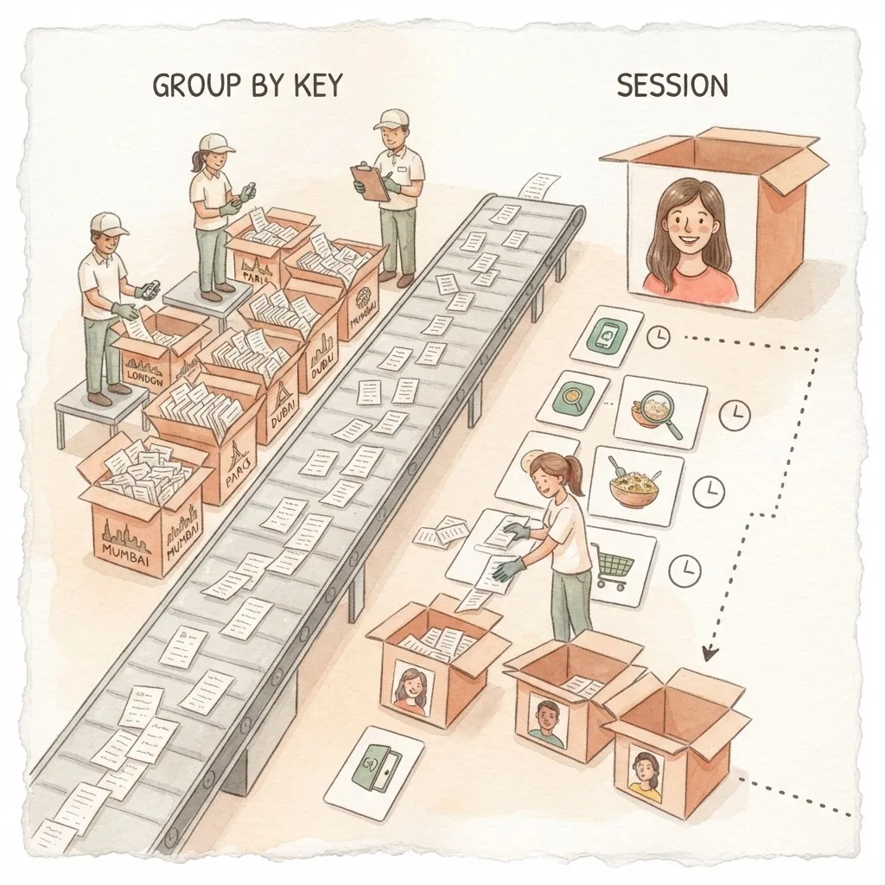
Swiggy's end-of-day report: "orders per city" means collecting every order slip into one box per city and counting each box. Sessionization is collecting every screen-tap of user Priya (from whichever server logged it) into Priya's box in time order, so you can see "opened app → searched biryani → added to cart → left". Where it breaks: a real "session" also needs a rule for where one session ends (say 30 minutes idle); that rule is reducer logic, not part of the grouping itself.
Join = group two datasets by the same key and combine within the group. GROUP BY = group one dataset by a key and aggregate within the group. The shuffle doesn't know the difference; only the reducer's code does. That's why one engine handles both.
"Bring all records with the same key to the same place" breaks down when there's a very large amount of data for a single key. In a social network, most users connect to a few hundred people at most, but a few celebrities may have many millions of followers. Such disproportionately active records are called linchpin objects (ref [38]) or hot keys.
Collecting all activity about a celebrity (e.g. replies to their post) in one reducer causes significant skew: one reducer processes far more records than the others (see "Skewed workloads and relieving hot spots", Ch.6). A MapReduce job is complete only when all its mappers and reducers have finished, so later jobs must wait for the slowest reducer.
Fix for joins: change how mapper outputs are partitioned. When processing the skewed input, send records about a linchpin object to a random reducer (instead of choosing deterministically by hash of key). For the other input of the join, send records about the linchpin object to all reducers (ref [39]). This is called skew join in Pig and Hive and sharded join in Crunch. Each reducer gets some of the skewed records plus the record it must be joined with. So the burden is shared evenly, at the cost of replicating the other join input to several reducers.
Fix for grouping: do it in two stages. The first MapReduce stage sends records to a random reducer, so each reducer groups a subset of the skewed key's records and outputs a more compact aggregated value per key. The second job combines the values from all first-stage reducers into one value per key.
9 ordinary users with a few hundred events each, plus one celebrity whose event count you set. 4 reducers. The job finishes when the most loaded reducer finishes.
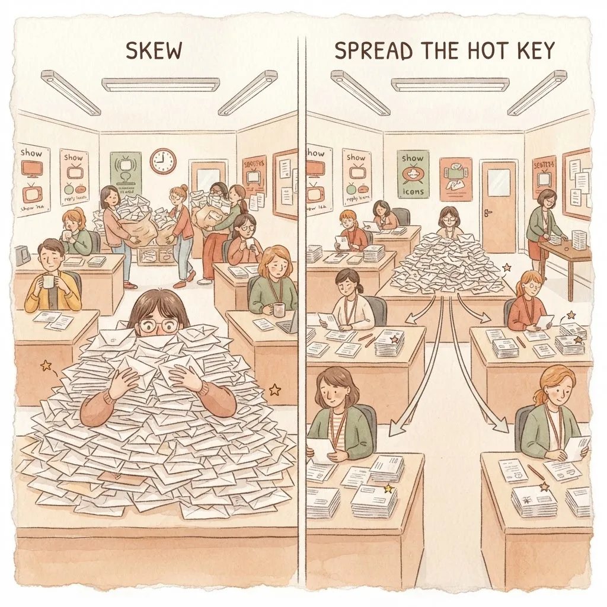
Fan mail at a TV channel. Normally each staff member answers letters for a few shows (hash by show name). Then a superstar's show gets 50,000 letters, all landing on one person's desk; the whole office can't close until that one person finishes. Skew join: spread the superstar's letters randomly across all staff, and give each of them a photocopy of the superstar's standard reply card (the "other side" replicated). Two-stage grouping for counting: each staff member counts the pile they got, then one person adds up the small totals. Where it breaks: you must know in advance which keys are hot; Pig and Hive find them by sampling or by being told.
Hash partitioning spreads keys evenly, not records. If one key has 50% of the records, one reducer gets 50% of the work no matter how many reducers you add. Randomizing the hot key's records spreads the records; replicating the small side guarantees every reducer still has what it needs for the join. Two-stage aggregation works because counts and sums can be combined from partial results.
9 users × ~200 events + 1 celebrity × 20,000 events, 4 reducers. Plain hash: one reducer has ≈20,000+ events, others ≈450 → job time ≈ 20,000 units. Skew join: celebrity's events split ≈5,000 per reducer, plus the celebrity's profile row copied 4 times → job time ≈ 5,500 units, about 3.6× faster.
The joins so far do the join logic in the reducers, so they're called reduce-side joins. The mappers prepare the input: extract key and value from each record, assign each pair to a reducer partition, and sort by key.
Advantage of the reduce-side approach: you need no assumptions about the input. Whatever its properties and structure, the mappers can prepare it for joining. Downside: all that sorting, copying to reducers and merging can be expensive. Depending on available memory buffers, data may be written to disk several times as it passes through MapReduce's stages (ref [37]).
If you can make certain assumptions about the input, joins can be faster with a map-side join. It uses a cut-down MapReduce job with no reducers and no sorting: each mapper reads one input file block from HDFS and writes one output file to HDFS. That's all. The next three plates are the three kinds.
Answer three questions about your two inputs. The helper follows the book's conditions for each algorithm.
| Join | Where the join happens | Needs | Output partitioned by |
|---|---|---|---|
| Sort-merge (reduce-side) | Reducers | Nothing | The join key |
| Broadcast hash | Mappers | One side small enough for memory | Same as the large input |
| Partitioned hash | Mappers | Both sides partitioned the same way | Same as the large input |
| Map-side merge | Mappers | Partitioned the same way and sorted | Same as the large input |
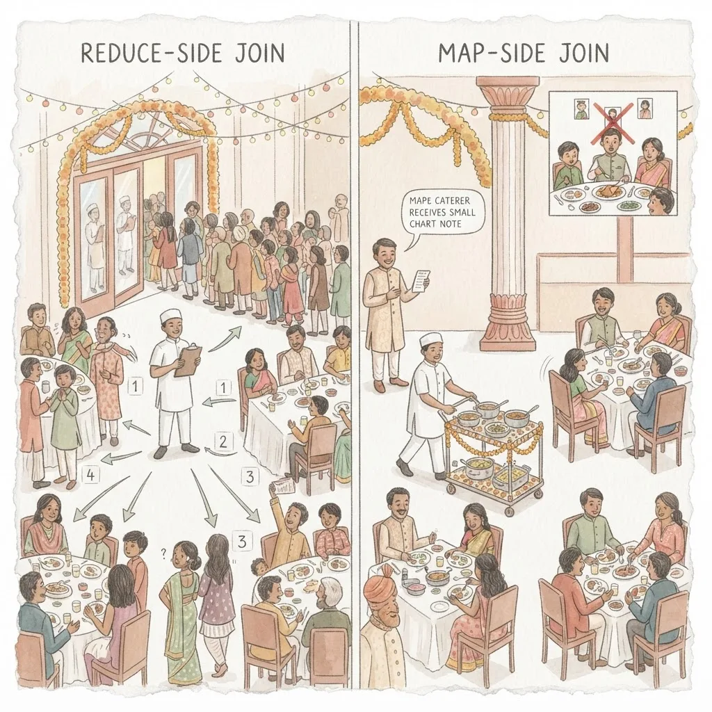
A reduce-side join is like a big wedding caterer who doesn't know anything about the guests, so they sort everyone at the door into tables (expensive, but works for any crowd). A map-side join is a caterer who's told in advance "guests are already seated by family" and can just walk table to table. Where it breaks: if the seating information was wrong, the map-side caterer serves the wrong food; map-side joins silently give wrong answers if their assumptions are false.
The expensive part of a reduce-side join is the shuffle: every byte is partitioned, sorted, written to local disk, sent over the network and merged. A map-side join skips the shuffle by relying on work already done: either one side is tiny (copy it everywhere), or a previous job already partitioned and maybe sorted both sides.
The simplest map-side join applies when a large dataset is joined with a small one. The small one must be small enough to load entirely into memory in each mapper.
Example: suppose in Figure 10-2 the user database is small enough to fit in memory. When a mapper starts, it first reads the user database from HDFS into an in-memory hash table. Then it scans the activity events and simply looks up each event's user ID in the hash table.
Footnote vi: this assumes exactly one entry per key in the hash table, which is probably true for a user database (a user ID identifies one user). In general the hash table may hold several entries with the same key, and the join outputs all matches for a key.
There can still be several mapper tasks, one per file block of the large input (here, the activity events). Each mapper loads the whole small input into memory.
This is a broadcast hash join: "broadcast" because each mapper for a partition of the large input reads the entirety of the small input (so the small input is effectively broadcast to all partitions of the large one); "hash" because of the hash table. It's supported by Pig (as "replicated join"), Hive ("MapJoin"), Cascading and Crunch, and used in data warehouse query engines like Impala (ref [40]).
Alternative: instead of an in-memory hash table, store the small input in a read-only index on the local disk (ref [41], LinkedIn's PalDB). Frequently used parts stay in the OS page cache, so lookups are almost as fast as an in-memory hash table, without requiring the data to fit in memory.
3 mappers, each with one block of activity events. Each mapper first loads the full user table, then scans its block. Press Next to process one event at a time.
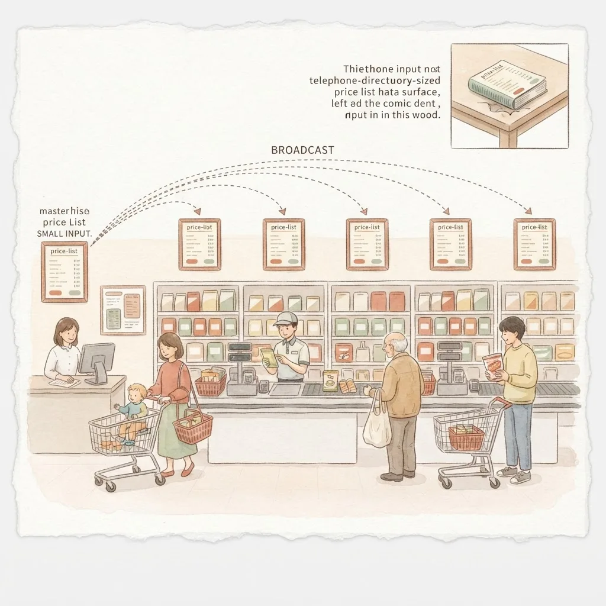
Every billing counter in a supermarket has the same small printed price list (broadcast). Customers (the big input) are split across counters; each cashier just looks up each item in their own copy of the list. Nobody has to sort customers by item. Where it breaks: if the "price list" were the size of a telephone directory, each counter couldn't hold a copy; that's when you need the partitioned version (next plate) or the on-disk index alternative.
Cost: the small input is read once per mapper (e.g. 1,000 mappers × 200 MB = 200 GB of reads), but the large input is read only once and never shuffled or sorted. As long as "small × number of mappers" is cheaper than shuffling the large input, it wins. Output stays in the same order and partitioning as the large input (plate 25).
Fits: 2 million users × ~60 bytes per entry (user ID, date of birth, hash-table overhead) ≈ 120 MB. The activity events are 64 GB, stored as 512 blocks of 128 MB, so the job runs 512 mapper tasks. Each one loads its own 120 MB copy of the users table, then streams its 128 MB block of events past it. The 64 GB of events are never sorted and never sent to reducers.
Doesn't fit: 200 million users × 60 bytes ≈ 12 GB per mapper. Most mapper containers can't hold that, so you fall back to a partitioned hash join (plate 23) or the reduce-side sort-merge join (plate 17).
If both inputs to the map-side join are partitioned in the same way, the hash-join approach can be applied to each partition independently. In Figure 10-2, you could arrange for both the activity events and the user database to be partitioned by the last decimal digit of the user ID (so ten partitions on each side). For example, mapper 3 first loads all users whose ID ends in 3 into a hash table, then scans all activity events for users whose ID ends in 3.
If partitioning is done correctly, every record you might want to join is in the same-numbered partition, so each mapper only needs to read one partition from each input. Advantage: each mapper loads a smaller amount of data into its hash table.
This only works if both inputs have the same number of partitions, with records assigned by the same key and the same hash function. If the inputs were produced by earlier MapReduce jobs that already did this grouping, that's a reasonable assumption.
Partitioned hash joins are called bucketed map joins in Hive (ref [37]).
Pick a mapper. It reads only users ending in that digit and only events ending in that digit. Toggle "mismatched partitioning" to see what goes wrong if one side was partitioned differently (by last digit of ID ÷ 2).
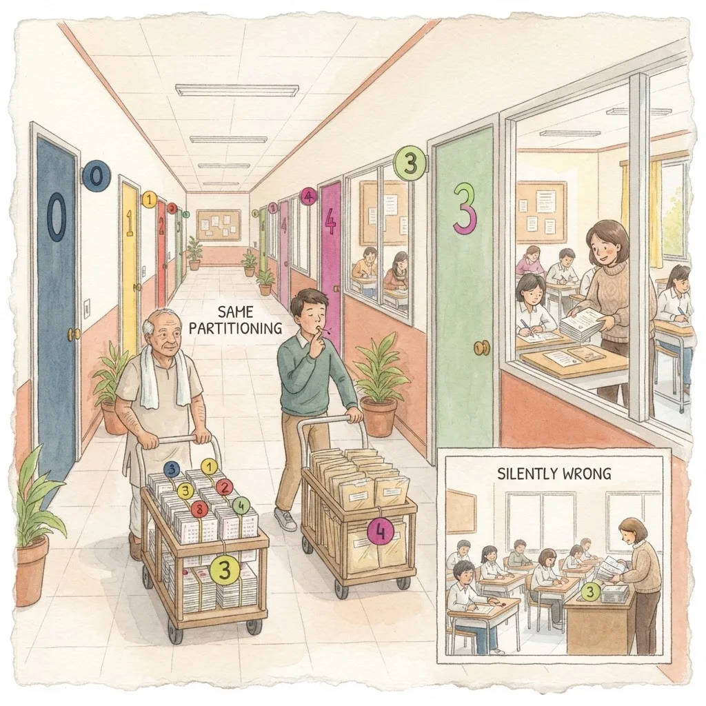
A big school's exam hall where both the answer sheets and the question-paper packets are already sorted into rooms by the last digit of the roll number. Invigilator 3 only needs room 3's sheets and room 3's packets. Where it breaks: if the office sorted answer sheets by last digit but question packets by first digit, invigilator 3 would find students without papers; nothing warns you, results are just wrong.
"Same key, same hash function, same number of partitions" guarantees that partition(x) is identical on both sides for every key x. Then the global join is just the union of 10 small, independent joins, each a broadcast hash join on a tenth of the data. The partitioning work was paid for earlier, by whatever job wrote these datasets.
Another variant applies if the inputs are not only partitioned the same way but also sorted by the same key. Then it doesn't matter whether the inputs fit in memory, because a mapper can do the same merging a reducer would normally do: read both input files incrementally, in ascending key order, and match records with the same key.
If a map-side merge join is possible, earlier MapReduce jobs probably brought the inputs into this partitioned and sorted form. In principle, the join could have been done in the reduce stage of that earlier job. But a separate map-only job can still make sense, e.g. if the partitioned and sorted datasets are also needed for other purposes besides this join.
Left: users sorted by ID. Right: events sorted by user ID. At each step, compare the two current keys: equal → output a join; otherwise advance the smaller side. Memory needed: just the two current records.
Two people each holding a deck of cards sorted by number, laying them down side by side: whenever both top cards match, make a pair; otherwise the person with the smaller card puts one down and moves on. They never need a table to spread the cards on. Where it breaks: if either deck isn't actually sorted, matches get skipped and you won't notice.
This is the same "merge" step as in the reducer's sort-merge join and in LSM-tree compaction: two sorted streams, two cursors, one pass, constant memory. The sort was simply done earlier and saved, so this job can skip the shuffle.
When the output of a join is used by downstream jobs, the choice of map-side vs reduce-side affects the structure of the output:
Map-side joins also make more assumptions about the size, sorting and partitioning of their inputs. So knowing the physical data layout of datasets in HDFS becomes important when optimizing join strategies. It's not enough to know the encoding format and directory name; you also need the number of partitions and the keys by which data is partitioned and sorted.
In the Hadoop ecosystem, this partitioning metadata is often kept in HCatalog and the Hive metastore (ref [37]).
A library catalogue card saying not just "History books, shelf 7" but "sorted by author surname, split into 10 shelves by first letter". Without that card, the next librarian has to re-sort everything just to be safe. Where it breaks: a catalogue card can go out of date if someone re-shelves books; the Hive metastore has the same risk if a job writes data without updating it.
Partitioning and sort order are "free work" done by earlier jobs. Keeping metadata about them lets later jobs (and optimizers, plate 44) reuse that work instead of shuffling again. This is the batch equivalent of a database knowing which indexes exist.
We've talked about algorithms for MapReduce workflows but skipped a key question: what is the result of all that processing, and why run these jobs at all?
For database queries we separated OLTP (online transaction processing) from analytics (Ch.3). OLTP queries look up a small number of records by key using indexes, to show them to a user (e.g. on a web page). Analytic queries scan many records, doing groupings and aggregations, and the output is often a report: a graph of a metric over time, the top 10 items by some ranking, or a breakdown of a quantity into subcategories. The reader of such a report is often an analyst or manager making business decisions.
Where does batch processing fit? Neither transaction processing nor analytics. It's closer to analytics, since a batch process typically scans large portions of an input. But a workflow of MapReduce jobs isn't the same as an analytic SQL query (plate 30). The output of a batch process is often not a report but some other kind of structure, as the next two plates show.
| OLTP | Analytics | Batch processing | |
|---|---|---|---|
| Reads | Few records by key (index) | Many records (scan) | Large parts of the input (scan) |
| Output | A few rows to show a user | A report for an analyst / manager | Often a new data structure: search index, key-value database, ML model |
| Who consumes it | End user, now | Human decision-maker | Often another system (web app, search server) |
The same orders table read by an OLTP query, an analytics query and a batch job. Compare what each one produces and who uses it.
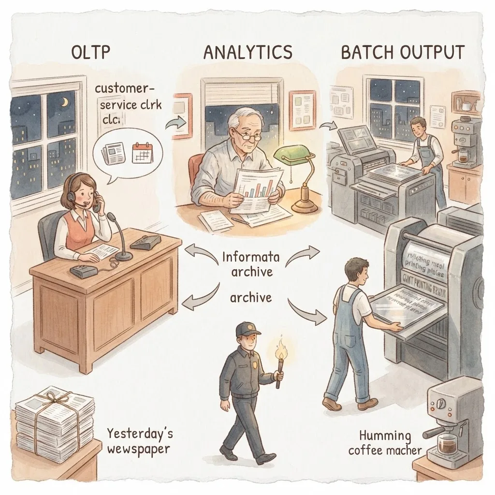
A newspaper's back office. OLTP is answering one reader's phone call about their subscription. Analytics is the monthly circulation report for the editor. Batch output is the overnight job that builds tomorrow's printing plates: not a report anyone reads, but a structure the printing press (another system) uses. Where it breaks: printing plates are physical and can't be swapped mid-run; batch outputs can be swapped in atomically (plate 28).
A batch job turns raw data into something optimized for reading: an index, a lookup table, a model. That's derived data (plate 1): computed from the source, cheap to rebuild, shaped for a particular access pattern.
Google's original use of MapReduce was to build indexes for its search engine, as a workflow of five to ten MapReduce jobs (ref [1]). Google later moved away from MapReduce for this (ref [42]; that paper describes Google's Percolator, a name the book doesn't use), but looking at MapReduce through the lens of building a search index helps understand it. (Even today, Hadoop MapReduce remains a good way to build indexes for Lucene/Solr (ref [43]).)
Recall from "SSTables and LSM-trees" (Ch.3) how a full-text index like Lucene works: it's a file where you can efficiently look up a keyword (the term dictionary) and find the list of all document IDs containing it (the postings list). That's very simplified: real indexes need more data to rank results by relevance, correct misspellings, resolve synonyms and so on, but the principle holds.
For full-text search over a fixed set of documents, batch processing is very effective for building indexes: mappers partition the documents as needed, each reducer builds the index for its partition, and index files are written to HDFS. Building such document-partitioned indexes ("Partitioning and secondary indexes", Ch.6) parallelizes very well. Since querying by keyword is read-only, index files are immutable once created.
If the documents change, two options:
Edit the documents. The mapper emits (word, docId) for each word; the shuffle groups by word; the reducer writes the sorted postings list.
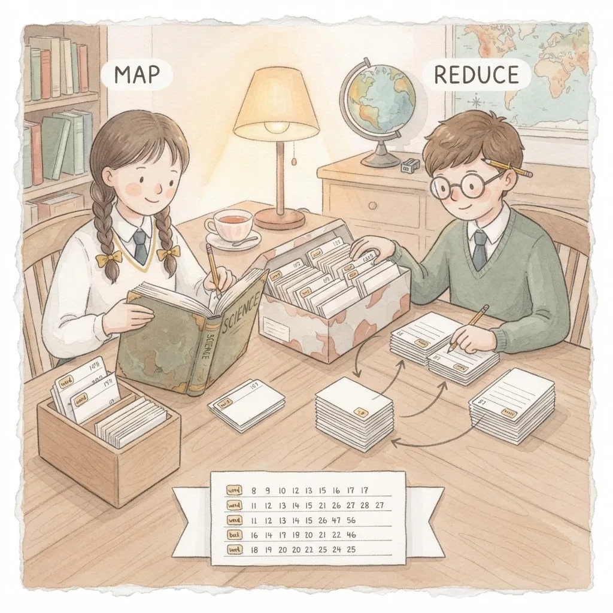
The index at the back of a textbook: "Photosynthesis: pages 12, 45, 88". Making it by hand means going through every page and noting each important word with the page number, then sorting those notes alphabetically. That's exactly map (note word + page) and reduce (collect all pages per word). Where it breaks: a textbook's index is printed once; a search engine's index must be rebuilt or patched as pages change.
The shuffle is doing the heavy lifting: an inverted index is literally "group (word, docId) pairs by word, sorted". Because the output files are immutable, search servers can memory-map them and serve reads without locks; a fresh build just replaces the old files.
Search indexes are one possible output. Another common use is building machine learning systems such as classifiers (spam filters, anomaly detection, image recognition) and recommendation systems (people you may know, products you may be interested in, related searches; ref [29]).
The output of those jobs is often some kind of database: e.g. one you query by user ID to get suggested friends, or by product ID to get related products (ref [44]). These databases must be queried from the web application, which is usually separate from the Hadoop infrastructure. So how does batch output get into a database the web app can query?
The obvious choice: use your database's client library inside a mapper or reducer and write to the database server one record at a time. It works (if your firewall lets Hadoop reach production databases), but it's a bad idea:
Much better: build a brand-new database inside the batch job and write it as files to the job's output directory in HDFS, just like search indexes. These files are immutable once written and can be loaded in bulk into servers that handle read-only queries. Key-value stores that support building database files in MapReduce include Voldemort (ref [45]), Terrapin (ref [46]), ElephantDB (ref [47]) and HBase bulk loading (ref [48]).
Building these files is a good fit for MapReduce: extract a key in the mapper, then sort by key, and you've already done much of the work of building an index. Since most of these stores are read-only (files written once by a batch job, then immutable), the data structures are simple. For example, they don't need a WAL (write-ahead log) ("Update-in-place vs append-only logging", Ch.3).
When loading data into Voldemort, the server keeps serving the old data files while the new ones are copied from HDFS to its local disk. When copying finishes, it atomically switches to the new files. If anything goes wrong, it can easily switch back, because the old files are still there and immutable (ref [45]).
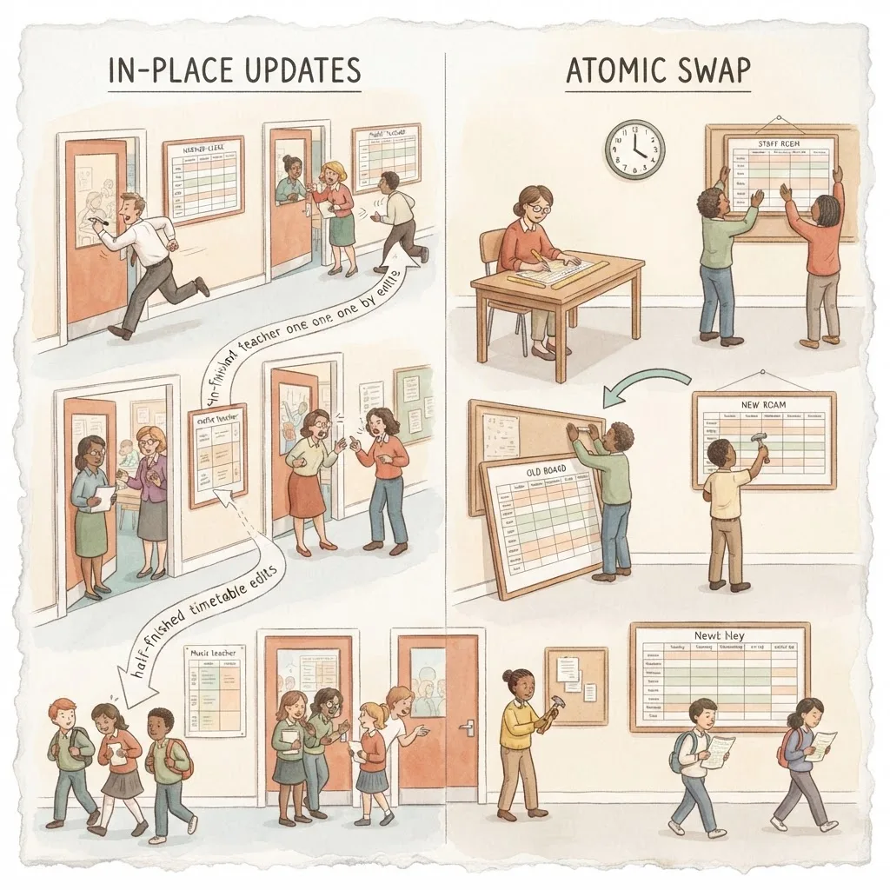
A school changing its timetable. Bad way: during the school day, walk into each classroom and change entries one by one; for an hour, some classes follow the old timetable and some the new, and if you stop halfway, chaos. Good way: print the full new timetable in the staff room, check it, then at 4 pm swap the notice board in one go; if there's a mistake, pin the old one back. Where it breaks: the read-only server can't take normal writes; if users need to change data live, this pattern alone isn't enough.
The job's output is a complete, immutable snapshot. Readers always see either the whole old version or the whole new version, never a mix, because switching is a single pointer change. Failed tasks write only to their own temporary files, which the framework throws away, so the all-or-nothing guarantee stays intact.
The Unix philosophy (plate 7) encourages experimentation by being explicit about dataflow: a program reads input and writes output. The input is left unchanged, any previous output is completely replaced, and there are no other side-effects. So you can re-run a command as often as you like, tweaking or debugging, without messing up your system's state.
MapReduce output follows the same philosophy. By treating inputs as immutable and avoiding side-effects (like writing to external databases), batch jobs get good performance and are much easier to maintain:
So Unix's design principles also work well for Hadoop. But they differ in some ways: most Unix tools assume untyped text files, so everything does a lot of input parsing (e.g. {print $7}). On Hadoop, some of those low-value conversions are removed by using structured file formats: Avro (Ch.4) and Parquet ("Column-oriented storage", Ch.3) are often used, since they provide efficient schema-based encoding and allow schema evolution over time.
Same buggy code ("price in paise stored as rupees", ×100 too big), two systems. Click through and compare what "roll back the code" achieves.
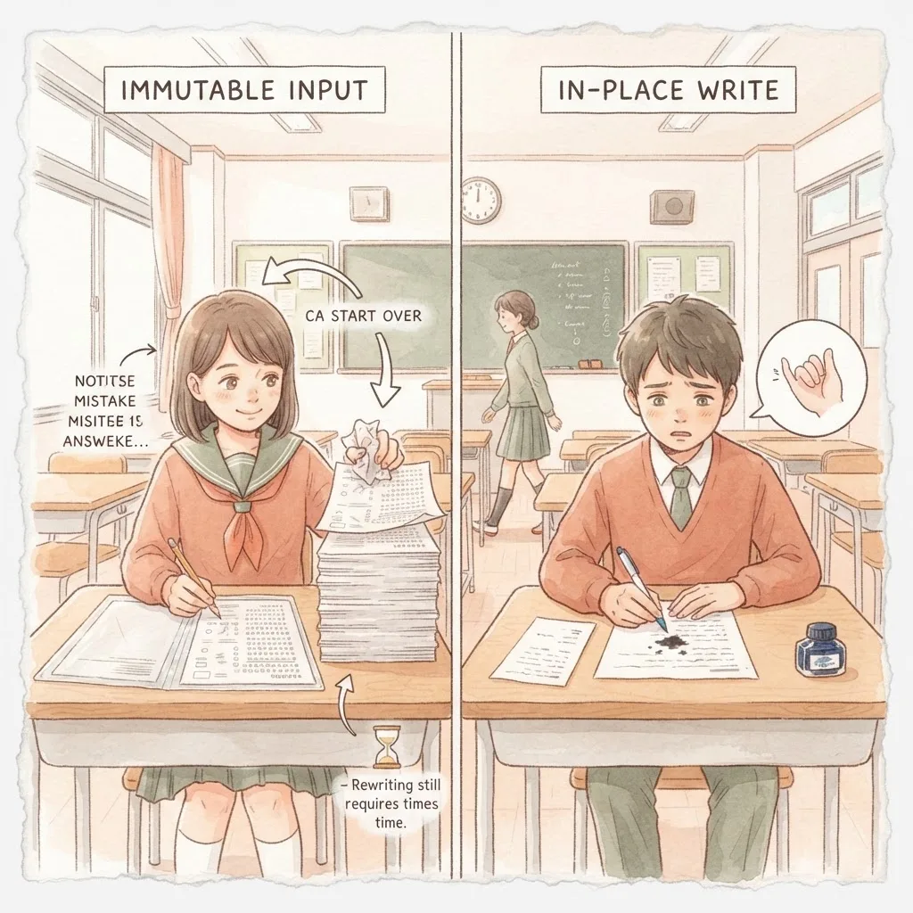
Writing an exam answer in pencil on a photocopy vs in pen on the only original. With the photocopy (immutable input), a mistake costs you a new photocopy and a rewrite. With pen on the original (a read/write database), "I'll be more careful next time" doesn't fix the page already ruined. Where it breaks: re-running a big batch job isn't free: it can take hours and lots of machines. Undoable doesn't mean instant.
The output is a pure function of the input and the code. Change the code, re-run, get a new correct output; the input never got polluted. In a read/write database, the data itself is the accumulated result of every past write, including the buggy ones, so there's nothing clean to recompute from unless you kept an immutable log of inputs (the idea behind event sourcing in Ch.11).
At the most abstract level, databases, Hadoop and operating systems all do the same things: store data and let you process and query it (ref [51]). A database stores records in some data model (rows, documents, vertices); an OS filesystem stores data in files. At their core both are "information management" systems (ref [52]).
Hadoop is somewhat like a distributed version of Unix: HDFS is the filesystem, and MapReduce is a quirky implementation of a Unix process (one that happens to always run sort between the map and reduce phases). We've seen how joins and grouping can be built on these primitives.
When the MapReduce paper (ref [1]) was published, it was in some sense not new at all. All the processing and parallel join algorithms in the last sections had been implemented in MPP (massively parallel processing) databases more than a decade earlier (refs [3, 39]). The Gamma database machine, Teradata and Tandem NonStop SQL were pioneers (ref [53]).
The biggest difference: MPP databases focus on parallel execution of analytic SQL queries on a cluster, while MapReduce plus a distributed filesystem is much more like a general-purpose operating system that can run arbitrary programs. The next three plates unpack this.
| MPP database | MapReduce + HDFS | |
|---|---|---|
| Like a… | Specialized SQL engine | Distributed operating system |
| Storage (plate 31) | Proprietary format; model the data first | Any bytes; dump first, interpret later |
| Processing (plate 32) | SQL queries, tightly optimized | Arbitrary code; SQL can be built on top (Hive) |
| Faults (plate 33) | Abort and re-run the whole query; prefer memory | Retry single tasks; eager to write to disk |
Side by side: storing the data, processing it, and surviving a machine failure.
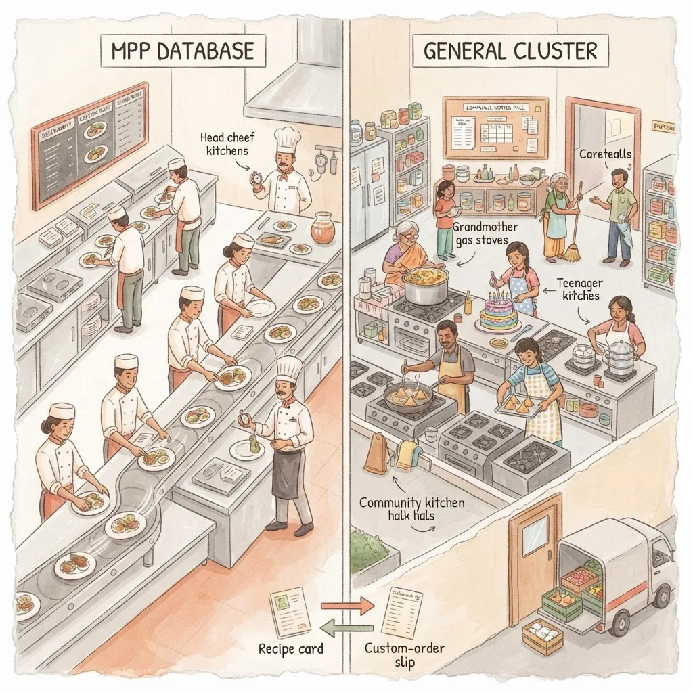
An MPP database is a fully equipped restaurant kitchen built for one menu: incredibly fast at the dishes it's designed for. Hadoop is a big rented community kitchen with stoves and storage: slower for any one dish, but anyone can bring any ingredients and cook anything, from biryani to birthday cakes. Where it breaks: over time each side copied the other (plate 45): restaurants added custom orders, community kitchens added proper recipes.
The parallel join algorithms (partitioned hash join, sort-merge, broadcast) are the same in both worlds. The difference is in what surrounds them: a database owns storage format, query language and execution together; Hadoop separates a generic filesystem from a generic way of running code, so many different tools can share them.
Databases require you to structure data according to a particular model (relational, documents…). Files in a distributed filesystem are just byte sequences, written in any data model and encoding. They might be database records, but equally images, videos, sensor readings, sparse matrices, feature vectors, genome sequences, or anything else.
Bluntly: Hadoop opened up the possibility of indiscriminately dumping data into HDFS and only later figuring out how to process it (ref [54]). By contrast, MPP databases typically need careful up-front modeling of data and query patterns before importing data into the database's proprietary storage format.
From a purist view, careful modeling and import seems desirable, since users get better-quality data. But in practice, simply making data available quickly, even in a quirky, hard-to-use raw format, is often more valuable than trying to decide the ideal data model up front (ref [55]).
The idea is like a data warehouse (Ch.3): bringing data from many parts of a large organization into one place is valuable because it enables joins across previously separate datasets. An MPP database's careful schema design slows down that centralized collection. Collecting data raw and worrying about schemas later speeds it up, a concept sometimes called a "data lake" or "enterprise data hub" (ref [56]).
Indiscriminate dumping shifts the burden of interpreting the data: instead of forcing the producer to bring it into a standard format, interpretation becomes the consumer's problem. This is the schema-on-read approach ("Schema flexibility in the document model", Ch.2). It can be an advantage when producers and consumers are different teams with different priorities. There may not even be one ideal data model, but rather different views suitable for different purposes. Dumping raw data allows several such transformations. This has been called the sushi principle: "raw data is better" (ref [57]).
So Hadoop has often been used for ETL processes: data from transaction-processing systems is dumped into HDFS in raw form, then MapReduce jobs clean it up, transform it into a relational form, and import it into an MPP data warehouse for analysis. Data modeling still happens, but in a separate step, decoupled from data collection. This works because HDFS supports data in any format.
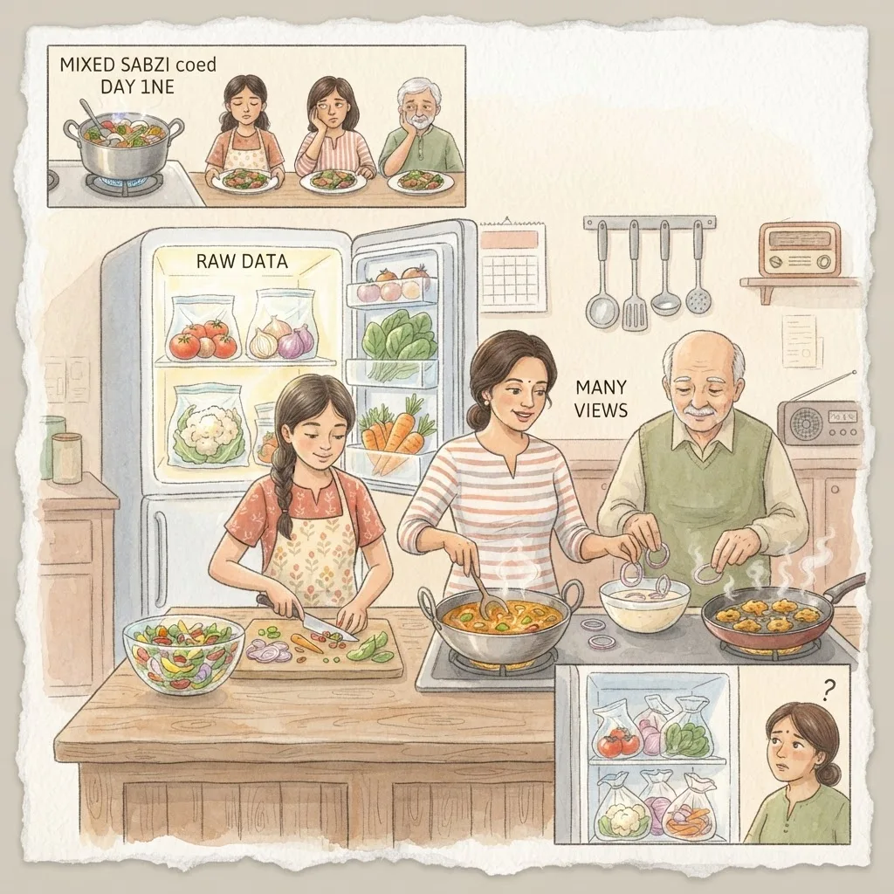
The sushi principle, Indian version: keep the raw vegetables in the fridge, not only the cooked sabzi. From raw vegetables, one person makes salad, another makes curry, another makes pakoras. If you cooked everything into one sabzi on day one, that's the only dish anyone gets. Where it breaks: raw vegetables need more work from every cook, and a fridge full of unlabelled bags becomes a mess; data lakes famously turn into "data swamps" when nobody documents what's in them (that phrase is not from the book).
Schema-on-write puts the cost of understanding data on the producer, once, up front. Schema-on-read puts it on each consumer, later, but lets collection start immediately and allows several interpretations. HDFS's "just bytes" storage is what makes schema-on-read possible at scale.
MPP databases are monolithic, tightly integrated software handling storage layout on disk, query planning, scheduling and execution. Since all parts can be tuned together for the database's needs, the system can perform very well on the queries it's designed for. And SQL allows expressive queries and elegant semantics without writing code, making it accessible to graphical tools used by business analysts, like Tableau.
But not every kind of processing can sensibly be expressed as SQL. If you're building machine learning and recommendation systems, full-text search indexes with relevance ranking models, or doing image analysis, you most likely need a more general model. Such processing is often very application-specific (e.g. feature engineering for ML, natural language models for machine translation, risk estimation functions for fraud prediction), so it inevitably needs code, not just queries.
MapReduce let engineers easily run their own code over large datasets. With HDFS and MapReduce you can build a SQL engine on top, which is what Hive did (ref [31]). But you can also write many other kinds of batch process that don't fit SQL.
Later, people found MapReduce too limiting and too slow for some processing, so other models were built on Hadoop (plate 34). Two models (SQL and MapReduce) weren't enough: even more were needed! Thanks to Hadoop's openness, a whole range of approaches was feasible, which wouldn't have been possible inside a monolithic MPP database (ref [58]).
Crucially, these different models can all run on one shared cluster, all accessing the same files on HDFS. No need to import data into several specialized systems for different kinds of processing. Not having to move data around makes it much easier to derive value from it and to experiment with new processing models.
The Hadoop ecosystem includes both random-access OLTP databases such as HBase (an LSM-tree store, Ch.3) and MPP-style analytic databases such as Impala (ref [40]). Neither uses MapReduce, but both use HDFS for storage. Very different ways of accessing and processing data, yet they coexist in one system.
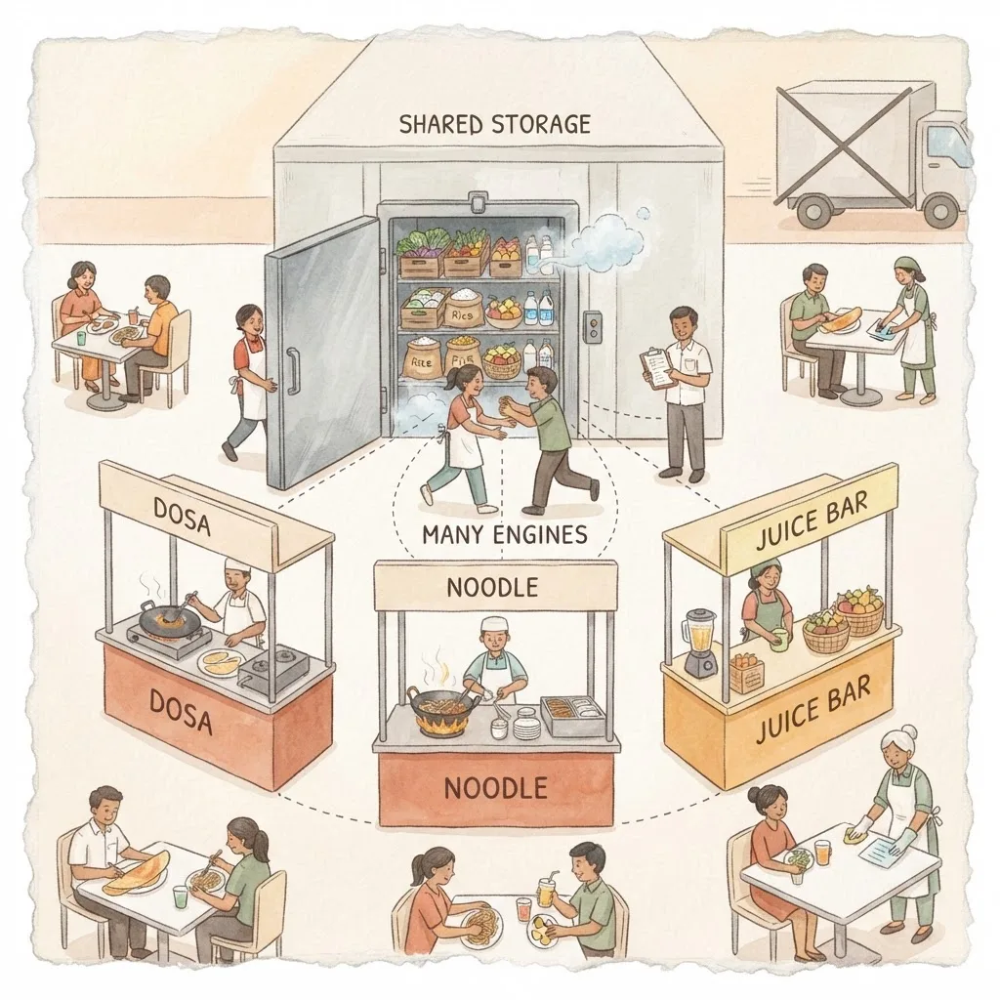
A food court sharing one central cold storage. The dosa stall, the Chinese stall and the juice bar each cook differently, but they all take ingredients from the same store-room, so nobody has to truck vegetables from one restaurant to another. Where it breaks: shared storage means stalls compete for the same space and staff (cluster resources), which leads straight to the scheduling and preemption story in the next plate.
Because HDFS is a neutral layer (bytes in files), any engine that can read the file format can use the data. The expensive part of big data is often moving it; sharing storage removes that cost and lowers the barrier to trying a new engine.
Two more design differences between MapReduce and MPP databases: handling faults and use of memory and disk. Batch processes are less sensitive to faults than online systems: if they fail, users aren't immediately affected, and they can always be run again.
If a node crashes during a query, most MPP databases abort the entire query and either let the user resubmit or rerun it automatically (ref [3]). Queries normally run for seconds or a few minutes, so that's acceptable: retrying is cheap. MPP databases also prefer to keep as much data as possible in memory (e.g. using hash joins) to avoid reading from disk.
MapReduce can tolerate the failure of a map or reduce task without affecting the job as a whole, by retrying at the granularity of one task. It's also very eager to write to disk, partly for fault tolerance and partly assuming the data will be too big for memory anyway.
The MapReduce approach suits larger jobs: ones processing so much data for so long that they'll likely see at least one task failure. Re-running the entire job for one task failure would be wasteful. Even if task-level recovery adds overhead that slows down failure-free runs, it can be a reasonable trade-off if task failures are frequent enough.
But how realistic is that? In most clusters, machine failures do occur but aren't very frequent, probably rare enough that most jobs never see one. Is it worth significant overhead for fault tolerance?
To understand MapReduce's sparing use of memory and task-level recovery, look at the environment it was designed for. Google has mixed-use datacenters where online production services and offline batch jobs run on the same machines. Every task has a resource allocation (CPU cores, RAM, disk space…) enforced with containers. Every task also has a priority: if a higher-priority task needs resources, lower-priority tasks on that machine can be terminated (preempted). Priority also sets pricing: teams pay for resources, and higher priority costs more (ref [59], Borg).
This lets non-production (low-priority) resources be over-committed, since the system knows it can reclaim them. That gives better machine utilization and efficiency than segregating production and non-production tasks. But MapReduce jobs run at low priority, so they risk being preempted at any time. Batch jobs effectively "pick up the scraps under the table", using whatever resources are left after high-priority processes take what they need.
At Google, a MapReduce task that runs for an hour has about a 5% risk of being terminated to make room for a higher-priority process. That's more than an order of magnitude higher than the failure rate from hardware issues, reboots and other causes (ref [59]). At that rate, if a job has 100 tasks running 10 minutes each, there's a greater than 50% risk that at least one task is terminated before finishing.
That's why MapReduce tolerates frequent unexpected task termination: not because hardware is unreliable, but because the freedom to kill processes arbitrarily enables better resource utilization.
Among open-source cluster schedulers, preemption is less widely used. YARN's CapacityScheduler supports preemption for balancing resources between queues (ref [58]), but general priority preemption is not supported in YARN, Mesos or Kubernetes at the time of writing (ref [60]). Where tasks aren't killed often, MapReduce's design decisions make less sense. The next section looks at alternatives that decide differently.
Modelled: the 5% per hour is the book's Google figure; the constant-rate survival formula below is our own simple model, not the book's. Assume each task faces a constant kill rate of 5% per hour. The chance that one task of length t minutes survives is 0.95t/60; the chance that all n tasks survive is that to the power n.
One 10-minute task: survival = 0.9510/60 = 0.950.1667 ≈ 0.99149, so ≈0.85% risk. 100 such tasks: all survive with probability 0.99149100 ≈ 0.425. So at least one is killed with probability ≈ 57.5%, matching the book's "greater than 50%". If the job restarted from scratch on any kill (MPP style), it would succeed first time only ~42% of the time.
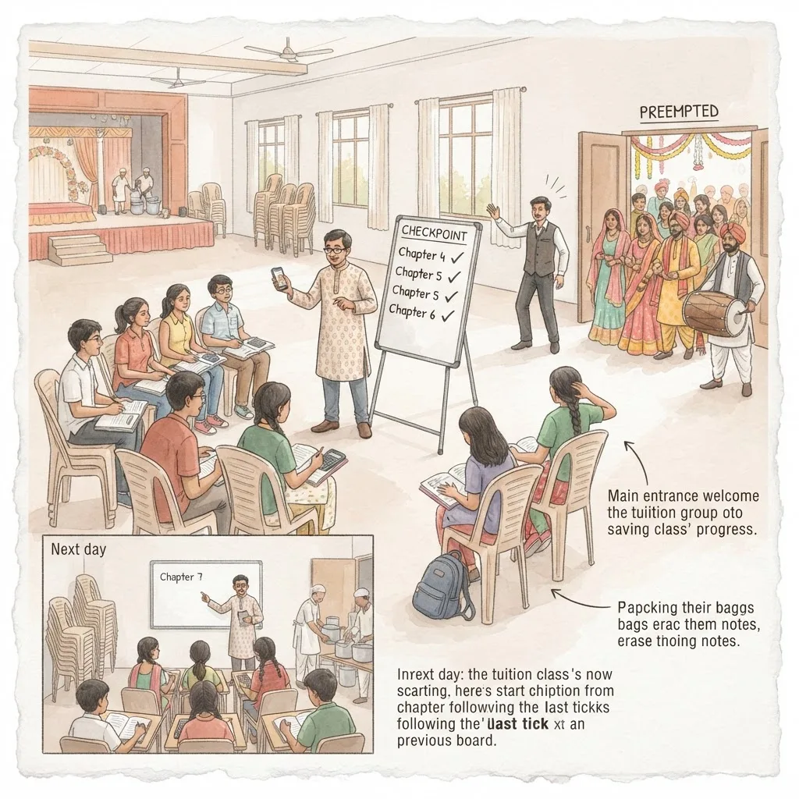
A wedding hall that rents out empty slots cheaply to a tuition class, on the condition that the class leaves whenever a wedding party arrives. The tutor learns to write the day's progress on the board after every chapter (write to disk), so when they're kicked out they resume from the last chapter, not from page 1. Where it breaks: if the hall is almost never booked (an open-source cluster without preemption), all that note-taking is wasted effort, which is the book's point about YARN/Mesos/Kubernetes.
The expected cost of a job = useful work + overhead + (probability of failure × work lost per failure). MPP databases make overhead tiny but lose the whole query on any failure; fine when queries are short and failures rare. MapReduce pays a big constant overhead (disk writes) to make "work lost per failure" just one task; worth it when failures are frequent, i.e. under heavy preemption.
Since this edition, Kubernetes added pod priority and preemption (stable since v1.14, 2019), and cloud "spot"/"preemptible" VMs made "your batch worker may vanish at any time" common again, so task-level recovery matters once more.
MapReduce became very popular and was heavily hyped in the late 2000s, but it's just one of many possible programming models for distributed systems. Depending on data volume, data structure and the kind of processing, other tools may express a computation better.
The chapter still spent a lot of time on MapReduce because it's a useful learning tool: a fairly clear, simple abstraction on top of a distributed filesystem. "Simple" means easy to understand what it's doing, not easy to use. Quite the opposite: implementing a complex job with the raw MapReduce APIs is hard and laborious; e.g. you'd need to implement the join algorithms above from scratch (ref [37]).
In response, higher-level programming models (Pig, Hive, Cascading, Crunch) were created as abstractions on top of MapReduce. If you understand MapReduce they're fairly easy to learn, and their higher-level constructs make many common batch tasks much easier.
But the MapReduce execution model itself has problems that another layer of abstraction can't fix, showing up as poor performance for some kinds of processing. On one hand, MapReduce is very robust: you can process almost arbitrarily large data on an unreliable multi-tenant system with frequent task terminations, and it still gets the job done, albeit slowly. On the other hand, other tools are sometimes orders of magnitude faster for some processing.
The rest of the chapter looks at those alternatives for batch processing. Ch.11 moves to stream processing, which can be seen as another way of speeding up batch processing.
A timeline of three chained jobs. Each step shows one cost that a higher-level language on top cannot remove.
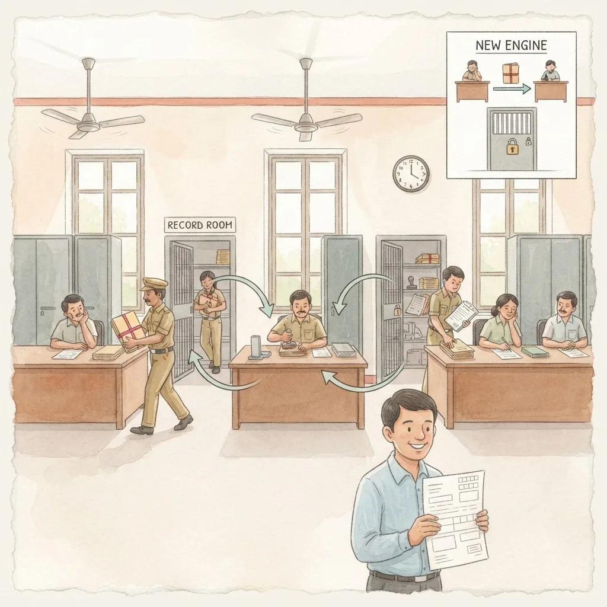
A government file system with a rule that every file must be stamped, photocopied and stored in the record room between every two desks. It's slow, but nothing is ever lost even if clerks keep being reassigned. A better form (Pig, Hive) makes it easier to fill in, but the photocopy rule still makes it slow; only changing the rule (a new engine) fixes that. Where it breaks: an office can't usually change its rules; open-source Hadoop could, by plugging in a new engine.
An abstraction compiles down to the same execution model. If Hive turns your query into five MapReduce jobs, it still pays for five rounds of HDFS writes and five full shuffles. Speed needs changes in how data moves between steps, not just in how you write the code.
Every MapReduce job is independent. Its only contact points with the world are its input and output directories on HDFS. To feed job 1's output into job 2, you set job 2's input directory to job 1's output directory, and an external workflow scheduler starts job 2 only after job 1 completes.
That's reasonable if job 1's output is a dataset you want to publish widely in your organization: then you need to refer to it by name and reuse it as input to several jobs (including other teams'). Publishing data to a well-known HDFS location allows loose coupling: jobs don't need to know who produces their input or consumes their output (plate 9).
But often the output of one job is only ever used as input to one other job, maintained by the same team. Then the HDFS files are just intermediate state: a way to pass data from one job to the next. In complex recommendation-system workflows of 50 or 100 MapReduce jobs (ref [29]), there's a lot of intermediate state.
Writing this intermediate state out to files is called materialization. (We met the term with materialized views in "Aggregation: data cubes and materialized views", Ch.3. It means to eagerly compute the result of an operation and write it out, rather than computing it on demand.)
By contrast, the Unix log example connected commands with pipes, which don't fully materialize intermediate state but stream output to input incrementally using only a small in-memory buffer.
Downsides of MapReduce fully materializing intermediate state, compared with Unix pipes:
The next plate (dataflow engines) adds one more cost of materializing to HDFS: the files are replicated to several machines and written to disk on each, which is a lot of I/O for temporary data.
Two stages of 4 tasks each. One task in stage 1 is a straggler. Materialized: stage 2 waits for all of stage 1. Pipelined: each stage-2 task starts as soon as its input is ready (only possible for operators that don't need to sort; see plate 38).
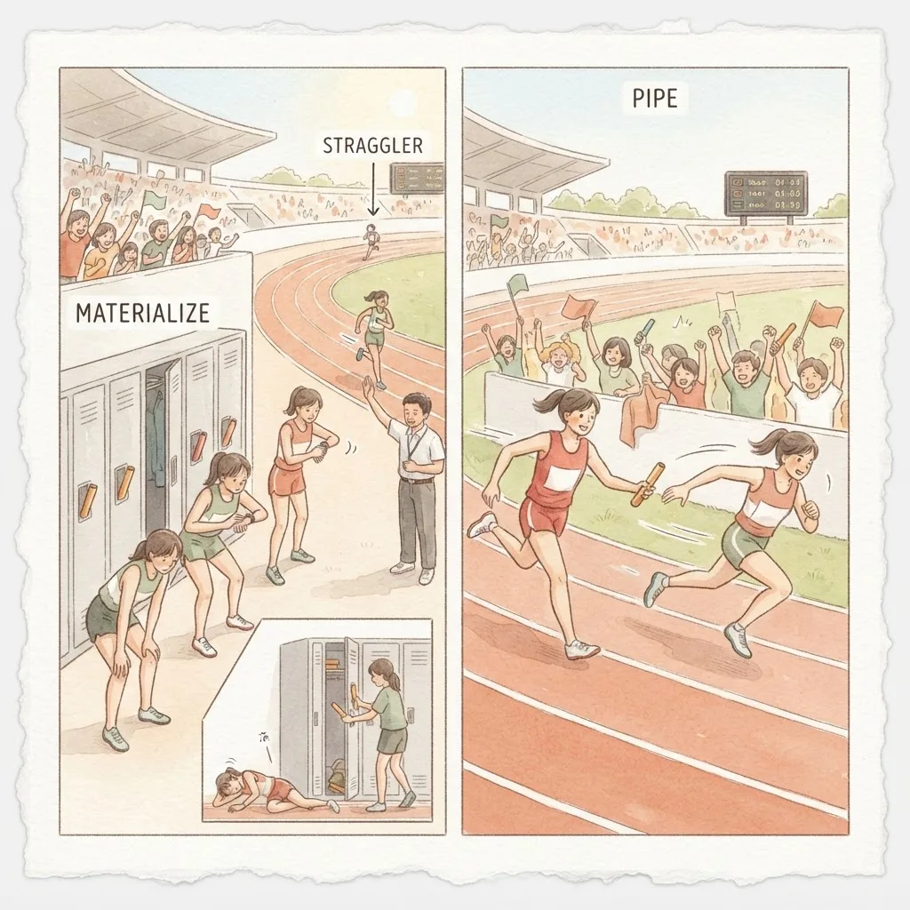
A relay race where every runner must first park the baton in a locker, and the next runner can only start once all four teams have locked their batons. One slow team (straggler) holds everyone up. A Unix pipe is a normal relay: baton passed hand to hand, next runner starts immediately. Where it breaks: the locker has an upside: if a runner faints, the next one can still fetch the baton from the locker (durability, plate 37).
Materialization buys durability and decoupling at the cost of latency (waiting for the slowest task, plus writing and replicating everything). Worth it for datasets that many teams reuse; wasteful for scratch data between two jobs that only one team ever runs together.
To fix MapReduce's problems, new execution engines for distributed batch computation were built. The best-known: Spark (refs [61, 62]), Tez (refs [63, 64]) and Flink (refs [65, 66]). They differ in design but share one thing: they handle an entire workflow as one job, rather than breaking it into independent sub-jobs.
Because they explicitly model the flow of data through several processing stages, they're called dataflow engines. Like MapReduce, they repeatedly call a user-defined function to process one record at a time on a single thread. They parallelize by partitioning inputs, and copy one function's output over the network to become another function's input.
The difference: these functions don't have to alternate strictly between map and reduce; they can be assembled more flexibly. They're called operators, and the engine offers several ways to connect one operator's output to another's input:
This style is based on research systems like Dryad (ref [67]) and Nephele (ref [68]), and has several advantages over MapReduce:
Dataflow engines can implement the same computations as MapReduce workflows and usually run significantly faster. Since operators generalize map and reduce, the same code can run on either engine: workflows in Pig, Hive or Cascading can switch from MapReduce to Tez with a simple configuration change, no code changes (ref [64]).
Tez is a fairly thin library relying on the YARN shuffle service to copy data between nodes (ref [58]). Spark and Flink are big frameworks with their own network communication, scheduling and user-facing APIs (plate 43).
A 3-step workflow: parse logs → join with users (partitioned hash join) → count per age group. Count the expensive steps each engine performs.
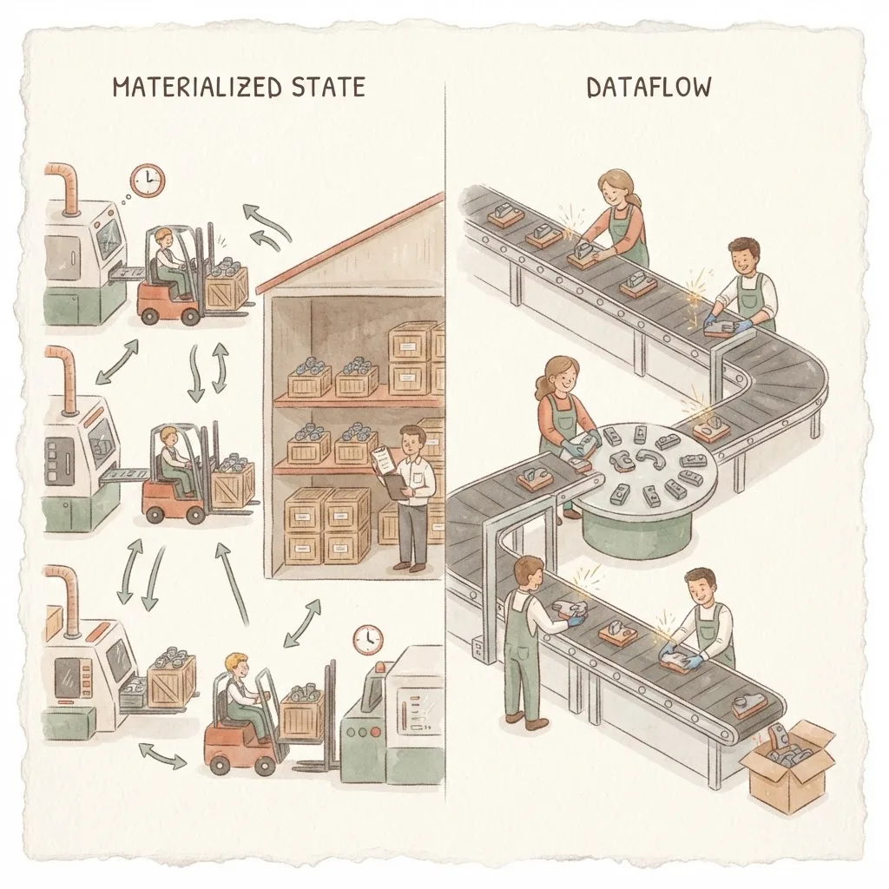
MapReduce is a factory where every half-finished product goes back to the central warehouse (HDFS, with three copies) between every two machines, and each machine waits until the whole batch is back. A dataflow engine is an assembly line: parts move on a conveyor straight to the next station, only stopping at a sorting station when sorting is actually needed. Where it breaks: if a station breaks on an assembly line, the parts in flight are gone; the engine must remake them (next plate).
Seeing the whole DAG lets the engine plan: pick the cheapest connection type per edge (sort / hash-partition / broadcast / one-to-one), fuse consecutive operators into one task, place tasks near their inputs, and stream data between them. MapReduce, seeing only one map-reduce pair at a time, could do none of this.
Spark became the dominant batch engine; Tez survives mainly under Hive; Flink became best known for stream processing (Ch.11) while keeping a batch mode. Spark later added adaptive query execution that changes join strategy at runtime based on actual data sizes.
An advantage of fully materializing to HDFS is durability, making fault tolerance easy in MapReduce: if a task fails, restart it on another machine and read the same input again from HDFS.
Spark, Flink and Tez avoid writing intermediate state to HDFS, so they tolerate faults differently: if a machine fails and its intermediate state is lost, it's recomputed from other data that's still available (a prior intermediate stage if possible, otherwise the original input data, normally on HDFS).
To recompute, the framework must track how each piece of data was computed: which input partitions it used and which operators were applied. Spark uses the RDD (resilient distributed dataset) abstraction to track the ancestry (lineage) of data (ref [61]). Flink checkpoints operator state, so it can resume an operator that hit a fault (ref [66]).
When recomputing, it matters whether the computation is deterministic: given the same input, do operators always produce the same output? This matters if some of the lost data was already sent to downstream operators. If a restarted operator's recomputed data differs from the original lost data, downstream operators find it very hard to resolve the contradictions between old and new data. For non-deterministic operators, the usual solution is to kill the downstream operators too and run them again on the new data.
To avoid such cascading faults, make operators deterministic. But non-determinism creeps in easily: many languages don't guarantee iteration order over a hash table; many probabilistic and statistical algorithms use random numbers; and any use of the system clock or external data sources is non-deterministic. Remove such causes to recover reliably, e.g. generate pseudo-random numbers with a fixed seed.
Recomputing isn't always right: if the intermediate data is much smaller than the source, or the computation is very CPU-intensive, it's probably cheaper to materialize the intermediate data to HDFS than to recompute it.
Three-stage lineage. Click a partition to "lose" it; the engine walks back to the nearest surviving ancestors and recomputes. Toggle non-determinism to see the cascade.
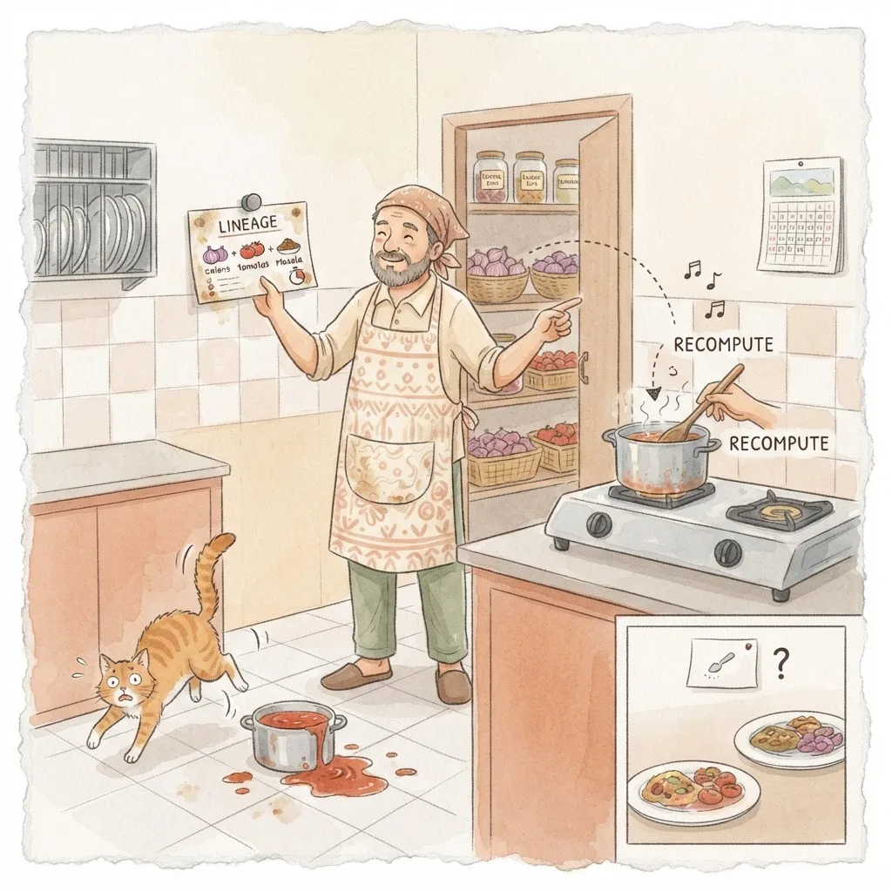
A recipe card instead of leftovers in the fridge. If the cooked gravy (intermediate state) gets spilled, you don't need a backup pot; the recipe (lineage) says "onions + tomatoes + masala, fried 10 minutes", and the raw ingredients are still in the store (HDFS input). Where it breaks: if the recipe says "add salt to taste" (non-deterministic), the remade gravy may taste different, and the dishes already served with the old gravy no longer match, so you'd have to remake those too.
Lineage turns a lost partition into a small recomputation graph: rerun only the tasks needed to rebuild what's missing. It's cheap when operators are deterministic and inputs are durable. It's expensive when the chain is long, data is wide (one partition depends on all upstream partitions, as after a shuffle), or the operator is CPU-heavy; then materializing (checkpointing) is the better trade.
Back to the Unix analogy: MapReduce is like writing each command's output to a temporary file; dataflow engines look much more like Unix pipes. Flink especially is built around pipelined execution: incrementally passing an operator's output to other operators, not waiting for input to be complete before processing it.
A sort inevitably needs to consume its entire input before producing any output, because the very last input record might have the lowest key and need to be the first output. Any operator requiring sorting must therefore accumulate state, at least temporarily. But many other parts of a workflow can be pipelined.
When the job completes, its output must go somewhere durable so users can find and use it: most likely HDFS again. So with a dataflow engine, materialized datasets on HDFS are still usually the inputs and final outputs of a job. As with MapReduce, inputs are immutable and the output is completely replaced. The improvement is that you don't write all the intermediate state to HDFS too.
Records arrive one at a time. A filter can emit each one immediately. A sort can't emit anything until the end, because the last record might be the smallest.
Announcing exam toppers vs checking attendance. The attendance clerk can tick each student the moment they walk in (pipelined). The person announcing ranks can't say "first place" until every paper is marked, because the last paper might be the best one (sort must wait). Where it breaks: clever tricks like "top-k so far" can give early guesses, but a full sorted output still needs every record.
The workflow is a mix of pipelinable operators (map, filter, hash-join probe) and blocking operators (sort, final aggregation). Dataflow engines stream through the first kind and only buffer at the second kind, and they keep that buffer local instead of in replicated HDFS. Durable storage is used just at the edges: the original input and the final output.
"Graph-like data models" (Ch.2) discussed modelling data as graphs and traversing edges and vertices with graph query languages, with an OLTP-style focus: quickly finding a small number of vertices matching some criteria.
Graphs in a batch context are also interesting: doing offline processing or analysis on an entire graph. This often arises in machine learning like recommendation engines, or in ranking systems. One of the most famous graph algorithms is PageRank (ref [69]), which estimates a web page's popularity from which other pages link to it. It's part of the formula a search engine uses to order results.
Naming aside (box in the book): dataflow engines like Spark, Flink and Tez arrange the operators in a job as a DAG (directed acyclic graph). That is not graph processing: in dataflow engines, the flow of data between operators is a graph, while the data itself is usually relational-style tuples. In graph processing, the data itself is a graph. "Another unfortunate naming confusion!"
Many graph algorithms work by traversing one edge at a time, joining a vertex with an adjacent vertex to propagate information, and repeating until some condition is met: e.g. no more edges to follow, or some metric converges. Figure 2-6 (Ch.2) did this to list all locations in North America by repeatedly following "within" edges; this kind of algorithm is a transitive closure.
You can store a graph in HDFS (files of vertices and edges), but "repeat until done" can't be expressed in plain MapReduce, which does a single pass over the data. So such algorithms are often run in an iterative style:
This works, but on MapReduce it's often very inefficient, because MapReduce doesn't know the algorithm is iterative: it always reads the entire input and writes a completely new output, even if only a small part of the graph changed since the last iteration.
A small "within" graph like Ch.2's Figure 2-6. Each iteration is a full MapReduce job that reads every edge. Watch how few new facts are found per round while the whole graph is re-read each time.
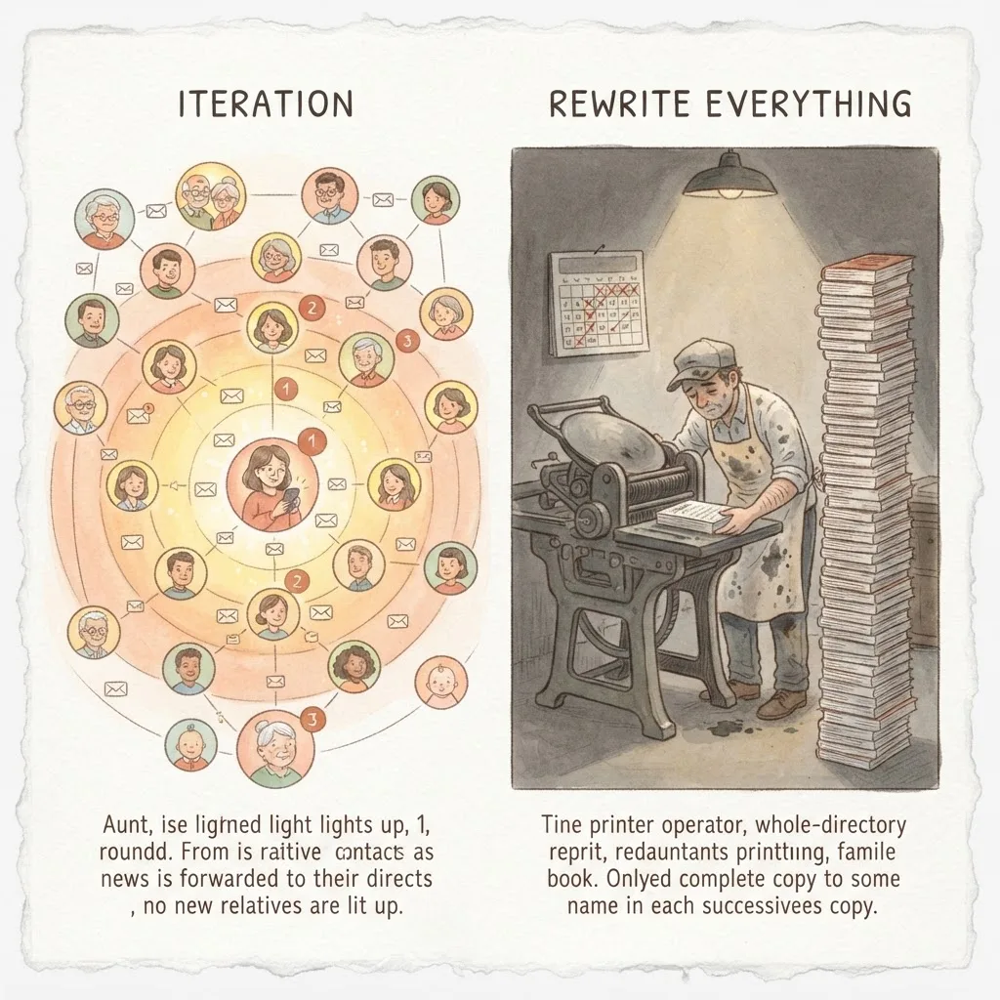
Spreading news in a joint family by WhatsApp forwards. Each "round", everyone who knows the news forwards it to their direct contacts, and you keep going until nobody new hears it. Doing this with MapReduce is like re-printing the entire family phone book every round just to mark the few people who newly heard. Where it breaks: WhatsApp forwards are naturally incremental; MapReduce has no memory between rounds, which is exactly what Pregel (next plate) adds.
An iterative algorithm has a small "frontier" (vertices that changed) and a big unchanged remainder. MapReduce's model is stateless between jobs, so every iteration pays full I/O for the remainder too: iterations × whole graph. An engine that keeps state across iterations can pay only for the frontier.
As an optimization for batch graph processing, the bulk synchronous parallel (BSP) model (ref [70]) has become popular. It's implemented by Apache Giraph (ref [37]), Spark's GraphX API and Flink's Gelly API (ref [71]). It's also called the Pregel model, since Google's Pregel paper popularized it (ref [72]).
Recall that in MapReduce, mappers conceptually "send a message" to a particular reduce call, because the framework collects all mapper outputs with the same key. Pregel has a similar idea: one vertex can "send a message" to another vertex, typically along the edges of the graph.
In each iteration (the Pregel paper calls it a superstep; the book just says iteration), a function is called for each vertex, passing it all messages sent to it, much like a reduce call. The difference from MapReduce: in Pregel, a vertex remembers its state in memory from one iteration to the next, so the function only needs to process new incoming messages. If no messages are sent in some part of the graph, no work is needed there.
It's a bit like the actor model ("Distributed actor frameworks", Ch.4) if you think of each vertex as an actor, except that vertex state and messages are fault-tolerant and durable, and communication proceeds in fixed rounds: every iteration, the framework delivers all messages sent in the previous iteration. Actors normally have no such timing guarantee.
Each vertex stores its best-known distance. In each superstep, a vertex whose distance improved sends "my distance + edge weight" along its outgoing edges. Vertices with no new messages do nothing (grey). The run stops when no messages are sent.
// vertex program for single-source shortest path (sketch in Pregel style, not from the book)
compute(vertex, messages):
best = min(messages, default = +∞)
if superstep == 0 and vertex.id == SOURCE: best = 0
if best < vertex.value: // state kept in memory between supersteps
vertex.value = best
for edge in vertex.outEdges:
sendMessage(edge.target, best + edge.weight)
voteToHalt() // sleep until a new message arrives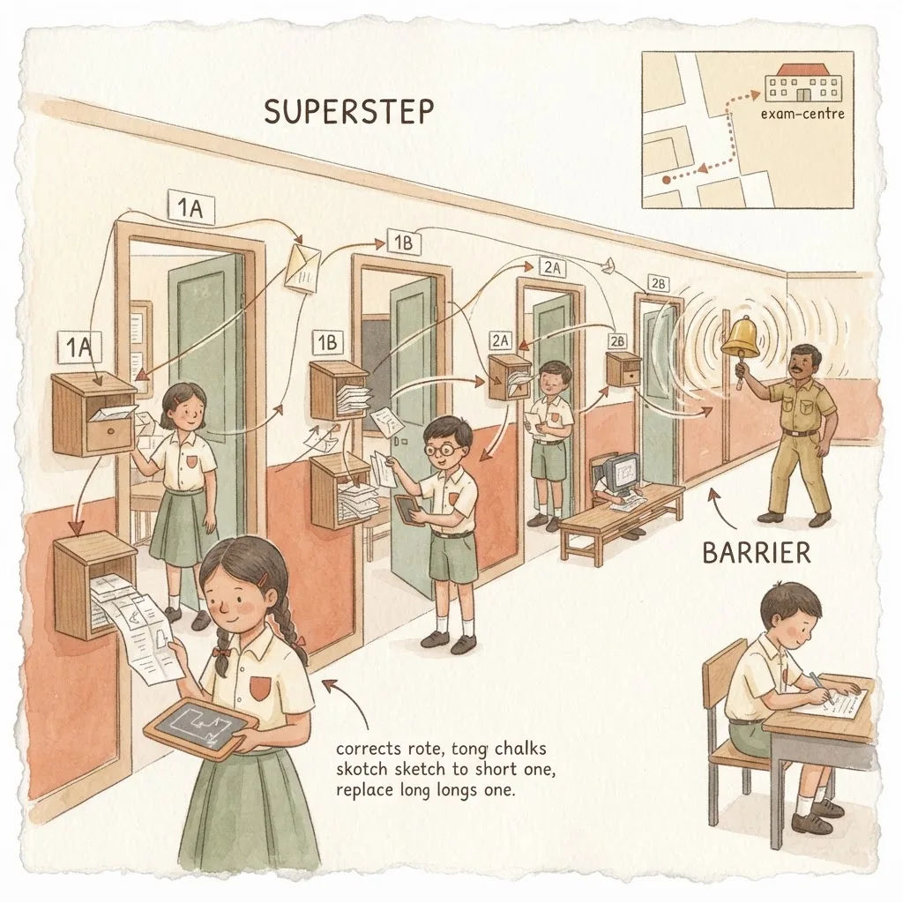
A school's class-monitor network passing a message about "fastest route to the exam centre". Every period (superstep), each monitor reads the notes in their pigeonhole, updates their own best route if a note shows a faster one, and only then slips notes to neighbours. A monitor with an empty pigeonhole just sits. The bell (barrier) makes sure everyone gets all notes from the last period before the next one starts. Where it breaks: the bell means the fastest monitor waits for the slowest every period; real networks of friends don't wait for a bell.
"Bulk synchronous" = compute locally, exchange messages in bulk, then a global barrier. Keeping vertex state in memory and only processing vertices with new messages is what makes iteration cheap compared with MapReduce's "re-read everything". The barrier gives a simple mental model: round n's messages are exactly what was sent in round n−1.
Vertices can only communicate by message passing (not by querying each other directly). That improves performance: messages can be batched, and there's less waiting for communication. The only waiting is between iterations: since Pregel guarantees that all messages sent in one iteration are delivered in the next, the previous iteration must completely finish, and all its messages must be copied over the network, before the next one starts.
Even though the network may drop, duplicate or arbitrarily delay messages ("Unreliable networks", Ch.8), Pregel implementations guarantee that messages are processed exactly once at their destination vertex in the following iteration. Like MapReduce, the framework transparently recovers from faults, keeping the programming model simple.
Fault tolerance comes from periodically checkpointing the state of all vertices at the end of an iteration, i.e. writing their full state to durable storage. If a node fails and its in-memory state is lost, the simplest fix is to roll back the whole graph computation to the last checkpoint and restart. If the algorithm is deterministic and messages are logged, it's also possible to selectively recover only the lost partition (as with dataflow engines) (ref [72]).
A 30-iteration job. A machine dies at the iteration you choose. With full rollback, everything since the last checkpoint is redone. With selective recovery, only the lost partition (1 of 4) is recomputed.
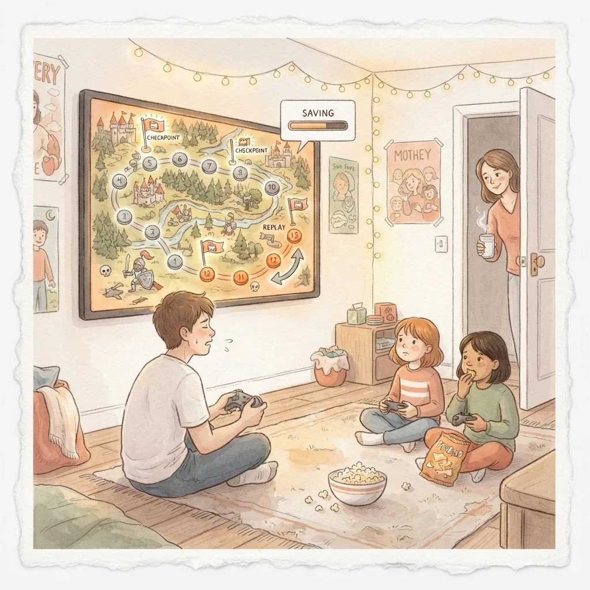
Saving a long video game at checkpoints. Die at level 13 with saves every 5 levels: you replay levels 11–13. Selective recovery is like only one teammate's character having to replay while the others wait, possible only if the game is deterministic and recorded every move (logged messages). Where it breaks: saving takes time; save too often and the game crawls, too rarely and each death costs a lot.
The barrier between supersteps gives a natural consistent snapshot point: no messages are in flight between iterations, so "state of all vertices" fully describes the computation. That's why checkpointing at iteration boundaries is simple and correct.
A vertex doesn't need to know which physical machine it runs on; it sends messages to a vertex ID. The framework decides how to partition the graph (which vertex runs on which machine) and how to route messages over the network.
Because the model handles one vertex at a time (sometimes called "think like a vertex"), the framework may partition the graph any way it likes. Ideally, vertices that communicate a lot would be co-located on the same machine. But finding such a partitioning is hard; in practice the graph is often simply partitioned by hash of vertex ID, making no attempt to group related vertices.
As a result, graph algorithms often have a lot of cross-machine communication overhead, and the intermediate state (messages between nodes) is often bigger than the original graph. Sending messages over the network can significantly slow down distributed graph algorithms.
So if your graph fits in memory on one computer, a single-machine (maybe even single-threaded) algorithm will quite likely outperform a distributed batch process (refs [73, 74]; ref [73] is the "Scalability! But at what COST?" paper). Even if the graph is bigger than memory but fits on one computer's disks, single-machine processing with a framework like GraphChi is viable (ref [75]). If the graph is too big for one machine, a distributed approach like Pregel is unavoidable; efficiently parallelizing graph algorithms is an area of ongoing research (ref [76]).
A graph of 4 tight "friend circles" (12 vertices). Partition it onto machines by hash of ID, or by circle. Every edge between machines means network messages each superstep.
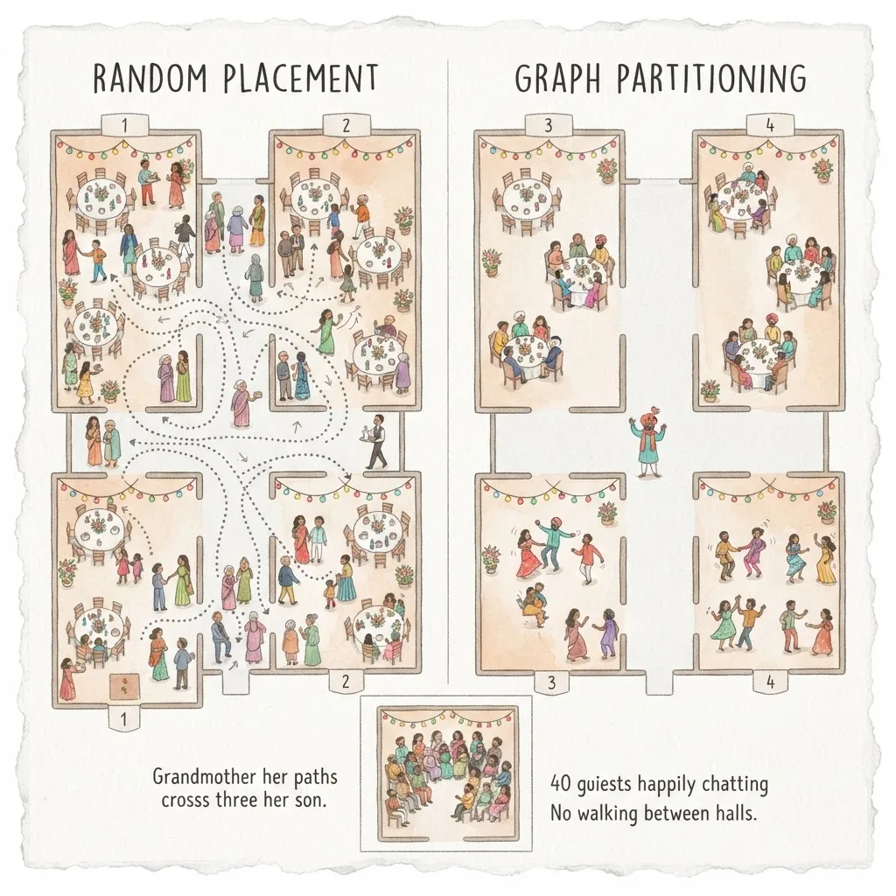
Seating 400 wedding guests across 4 halls. Seat them randomly (hash) and every family keeps walking between halls to talk; seat each family together and almost nobody moves. But figuring out every family's ties for 400 guests is a puzzle in itself. And if only 40 guests came, one hall would do: no walking at all (single machine wins). Where it breaks: real social graphs don't split cleanly into families; there are always "connector" people.
Graph algorithms are communication-bound: work per message is tiny, cost per network message is large. Hash partitioning makes nearly every edge a cross-machine edge (with k machines, about (k−1)/k of edges). The COST paper's point: measure a distributed system against a good single-threaded implementation, not just against itself on fewer machines.
Since MapReduce became popular, distributed batch engines have matured. Infrastructure is now robust enough to store and process many petabytes on clusters of over 10,000 machines. Since physically operating batch processes at that scale is considered more or less solved, attention has turned to: improving the programming model, improving processing efficiency, and broadening the set of problems these technologies can solve.
As discussed, higher-level languages and APIs like Hive, Pig, Cascading and Crunch became popular because hand-coding MapReduce is laborious. When Tez appeared, these languages had the extra benefit of moving to the new engine without rewriting job code. Spark and Flink also include their own high-level dataflow APIs, often inspired by FlumeJava (ref [34]).
These dataflow APIs generally use relational-style building blocks: joining datasets on a field's value, grouping tuples by key, filtering by a condition, and aggregating by counting, summing or other functions. Internally they're implemented with the join and grouping algorithms from earlier in this chapter.
Besides needing less code, high-level interfaces allow interactive use: you write analysis code incrementally in a shell and run it often to see what it does. That's very helpful when exploring a dataset and experimenting, and reminiscent of the Unix philosophy (plate 7).
Moreover, these interfaces not only make humans more productive; they also improve job execution efficiency at the machine level (next plate).
class ActivityMapper { map(...) { emit(userId, tag("E", event)) } }
class UserMapper { map(...) { emit(userId, tag("U", dob)) } }
class JoinReducer { reduce(...) { /* secondary sort, remember dob,
emit (url, age) */ } }
class AgeGroupMapper { ... } class AgeGroupReducer { ... }
// + job config, input/output dirs, partitioner,
// grouping comparator, sort comparator, scheduler XMLevents.join(users, "user_id")
.withColumn("age", ageAt("dob", "ts"))
.groupBy("url", bucket("age"))
.count()
.write.parquet("hdfs:///out/url_age")Both code boxes are illustrations, not from the book.
A Spark-like interactive shell (names are illustrative, not a real API). Each step adds one line and shows its output at once.
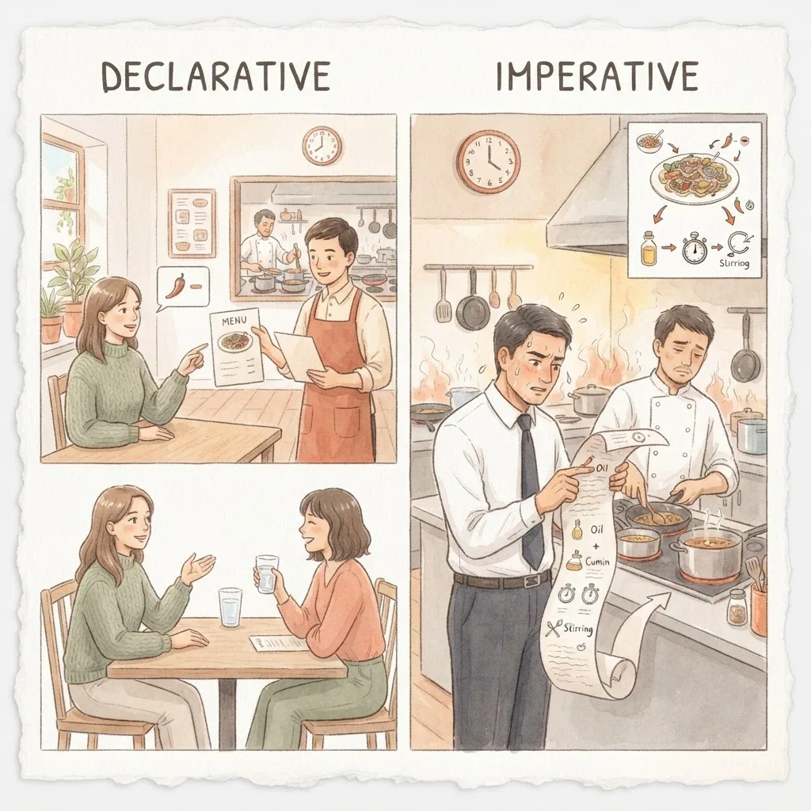
Ordering on Zomato vs instructing a cook step by step. "Paneer butter masala, less spicy" (high-level) vs "heat 2 spoons of oil, add cumin, wait 30 seconds…" (raw MapReduce). The kitchen still does all the steps, but you describe what you want. Where it breaks: for a dish not on the menu (custom ML code), you still need to write the steps yourself; that's why these APIs keep the option of user functions.
A high-level API builds a logical plan (join → derive column → group → count) instead of running code immediately. Because the engine sees the whole plan before running, it can choose algorithms and order, which is the topic of the next plate.
An advantage of specifying joins as relational operators (not hand-written code): the framework can analyze the join inputs' properties and automatically choose the most suitable join algorithm. Hive, Spark and Flink have cost-based query optimizers that do this, and can even change the order of joins to minimize intermediate state (refs [66, 77, 78, 79]).
The choice of join algorithm can make a big difference to a batch job's performance, and it's nice not to have to understand and remember them all. That's possible if joins are declarative: the application states which joins are needed, and the query optimizer decides how to execute them. (We met this idea in "Query languages for data", Ch.2.)
But in other ways, MapReduce and its dataflow successors are very different from SQL's fully declarative model. MapReduce was built around function callbacks: for each record or group, a user-defined function (mapper or reducer) is called and can run arbitrary code to decide what to output. Advantage: you can use a large ecosystem of existing libraries for parsing, natural language analysis, image analysis, numerical or statistical algorithms.
The freedom to easily run arbitrary code is what long distinguished MapReduce-heritage batch systems from MPP databases (plate 30). Databases do have user-defined functions (UDFs), but they're often cumbersome and poorly integrated with the package managers and dependency systems widely used in programming languages (Maven for Java, npm for JavaScript, RubyGems for Ruby…).
Yet dataflow engines found advantages in adding more declarative features beyond joins. If a callback only contains a simple filter or just selects some fields, there's significant CPU overhead in calling a function on every record.
If such simple filtering and mapping are expressed declaratively, the optimizer can use column-oriented storage (Ch.3) and read only the needed columns from disk. Hive, Spark DataFrames and Impala also use vectorized execution ("Memory bandwidth and pipelined execution", Ch.3): iterating over data in a tight inner loop that's friendly to CPU caches, avoiding function calls. Spark generates JVM bytecode (ref [79]) and Impala uses LLVM to generate native code for these inner loops (ref [40]).
By adding declarative aspects to high-level APIs, with optimizers that exploit them, batch frameworks start to look more like MPP databases (and reach comparable performance). At the same time, by still being able to run arbitrary code and read data in arbitrary formats, they keep their flexibility advantage.
Set the sizes and layout of two join inputs. The toy optimizer picks among the chapter's join algorithms using the book's conditions and a rough cost (bytes moved). Memory per task: 2 GB (modelled).
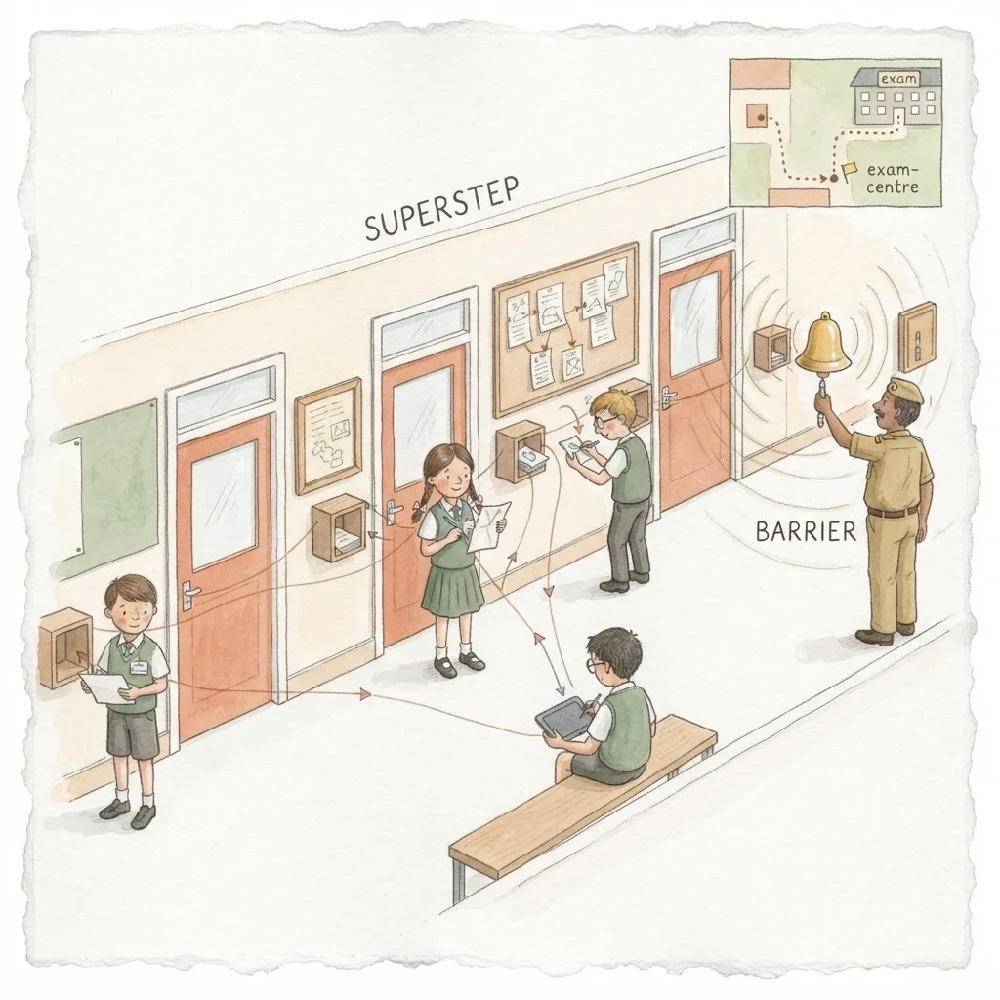
Telling a cab driver "fastest route to the airport" (declarative) vs "left, right, second left…" (imperative). The driver knows today's traffic and picks the best way (join algorithm). Where it breaks: if you need a stop at a specific tiny shop the driver doesn't know (custom logic), you still have to give exact directions, which is why engines keep UDFs.
An optimizer needs statistics (table sizes, partitioning, sort order) and freedom (a declarative plan it may rearrange). Opaque callbacks give it neither: it can't reorder them, push filters below joins, or skip unused columns. Each piece of logic moved from callbacks into declarative operators gives the optimizer more room.
Running arbitrary code is useful, but many standard processing patterns keep recurring, so reusable implementations of common building blocks are worth having. Traditionally, MPP databases served business intelligence analysts and business reporting, but that's just one of many domains where batch processing is used.
Batch engines are used for distributed execution of algorithms from an increasingly wide range of domains. As batch systems gain built-in functionality and high-level declarative operators, and as MPP databases become more programmable and flexible, the two are beginning to look alike: in the end, they're all just systems for storing and processing data.
Products placed by (price, spiciness). Click anywhere in the box to drop a query point; the k nearest products light up. A batch job would compute this for every product at once ("related products").
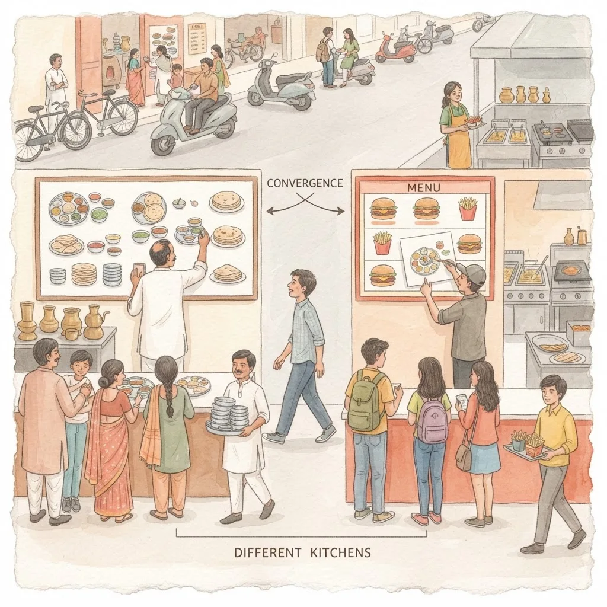
A thali restaurant that started with only "full meals" (SQL reports) and gradually added ready-made components (chutneys, rotis) that other dishes reuse, while the fast-food stall next door added a proper thali. Soon both menus look similar. Where it breaks: they still differ in kitchen design (storage formats, how arbitrary code runs); "look alike" isn't "identical".
Domain libraries are a middle ground between "write any code" and "write SQL": common algorithms are implemented once, carefully, on top of the engine's partitioning and fault tolerance, so users get both expressiveness and performance.
We started with Unix tools like awk, grep and sort, and saw their design philosophy carried forward into MapReduce and newer dataflow engines. Key principles: inputs are immutable, outputs are meant to become the input of another (as yet unknown) program, and complex problems are solved by composing small tools that "do one thing well".
In Unix, the uniform interface that lets programs compose is files and pipes; in MapReduce it's a distributed filesystem. Dataflow engines add their own pipe-like data transport to avoid materializing intermediate state to the distributed filesystem, but a job's initial input and final output are still usually on HDFS.
The two main problems distributed batch frameworks must solve:
In MapReduce, mappers are partitioned by input file block. Mapper output is re-partitioned, sorted and merged into a configurable number of reducer partitions. The purpose: bring all related data (e.g. all records with the same key) to the same place. Post-MapReduce dataflow engines try to avoid sorting unless required, but otherwise partition in a broadly similar way.
MapReduce writes to disk frequently, making it easy to recover from one failed task without restarting the whole job, but slowing execution when nothing fails. Dataflow engines materialize less and keep more in memory, so they must recompute more if a node fails. Deterministic operators reduce how much must be recomputed.
Join algorithms for MapReduce (most also used inside MPP databases and dataflow engines), which also illustrate how partitioned algorithms work:
Distributed batch engines have a deliberately restricted programming model: callbacks (mappers, reducers) are assumed to be stateless and to have no externally visible side-effects besides their designated output. This lets the framework hide hard distributed-systems problems: with crashes and network issues, tasks can be retried safely, and output of failed tasks is discarded. If several tasks for a partition succeed, only one makes its output visible.
So your batch code needn't implement fault tolerance: the framework guarantees the job's final output is the same as if no faults had occurred, even if tasks were retried. These reliable semantics are much stronger than what you usually get in online services that handle user requests and write to databases as a side-effect.
The distinguishing feature of a batch job: it reads input and produces output without modifying the input; the output is derived from the input. Crucially, the input is bounded: it has a known, fixed size (e.g. log files at some point in time, or a database snapshot). Because it's bounded, a job knows when it has read everything, so it eventually completes.
Next chapter: stream processing, where input is unbounded: you still have a job, but its inputs are never-ending streams. Such a job is never complete, because more work may arrive at any time. Stream and batch processing are similar at some level, but assuming unbounded streams changes a lot about how we build systems.
| Term | Plain meaning | Plate |
|---|---|---|
| System of record | The authoritative source of truth; data written here first, each fact once | 1 |
| Derived data | Data computed from other data (cache, index, view); can be rebuilt | 1 |
| Batch job | Reads a large bounded input, produces output, nobody waiting; measured by throughput | 2 |
| Stream processing / nearline | Like batch but processes events shortly after they happen | 2 |
| Working set | Amount of memory a job needs random access to | 6 |
| Unix philosophy | Small tools that do one thing well, composed via pipes | 7 |
| Uniform interface | One shared I/O format (in Unix: file descriptor / bytes / lines) | 8 |
| stdin / stdout | Standard input/output; lets the shell wire programs together | 9 |
| HDFS / GFS | Hadoop's / Google's distributed filesystem over many machines' disks | 11 |
| NameNode | HDFS server tracking which block is on which machine | 11 |
| Shared-nothing | Each machine has its own disks/CPU; coordinate over the network | 11 |
| Erasure coding | Redundancy (e.g. Reed–Solomon) that recovers lost data with less overhead than full copies | 11 |
| Mapper / reducer | Per-record callback that emits key-value pairs / per-key callback over all values | 12 |
| Shuffle | Partition by reducer (hash of key), sort, copy to reducers, merge | 13 |
| Data locality | Run computation on the machine that stores the data | 13 |
| Workflow scheduler | Runs chains of jobs in dependency order (Oozie, Azkaban, Luigi, Airflow, Pinball) | 14 |
| Equi-join | Join on equal field values | 15 |
| Secondary sort | Ordering values within a key (e.g. user record first, then events by time) | 17 |
| Sort-merge join | Reduce-side join: sort both sides by key, merge in the reducer | 17 |
| Sessionization | Grouping a user's events into sessions | 19 |
| Skew / linchpin object / hot key | One key with disproportionately many records | 20 |
| Skew join / sharded join | Spread hot key's records randomly, replicate the other side to all reducers | 20 |
| Map-side join | Join in mappers, no reducers or sorting; needs assumptions about inputs | 21 |
| Broadcast hash join (replicated join, MapJoin) | Small side loaded into a hash table in every mapper | 22 |
| Partitioned hash join (bucketed map join) | Both sides partitioned the same way; hash join per partition | 23 |
| Map-side merge join | Both sides partitioned and sorted; mapper merges | 24 |
| Human fault tolerance | Ability to recover from buggy code by re-running on immutable input | 29 |
| MPP database | Massively parallel processing database for analytic SQL (Teradata, Gamma…) | 30 |
| Data lake / sushi principle | Dump raw data first; "raw data is better"; schema-on-read | 31 |
| Preemption | Killing low-priority tasks to free resources for high-priority ones | 33 |
| Materialization | Eagerly computing and writing out intermediate results | 35 |
| Straggler | A task much slower than the rest of its stage | 35 |
| Dataflow engine / operator | Spark/Tez/Flink; whole workflow as a DAG of flexible functions | 36 |
| RDD | Spark's resilient distributed dataset; tracks lineage for recomputation | 37 |
| Deterministic operator | Same input → same output every time | 37 |
| Pipelined execution | Passing output to the next operator incrementally | 38 |
| Transitive closure | Repeatedly following edges until nothing new is found | 39 |
| BSP / Pregel | Bulk synchronous parallel: vertices exchange messages in fixed rounds | 40 |
| Cost-based optimizer | Chooses join algorithms and order using data statistics | 44 |
| Vectorized execution | Tight, cache-friendly loops over batches of values, no per-row calls | 44 |
| Bounded vs unbounded input | Known fixed size (batch) vs never-ending (stream) | 46 |
| System | What the chapter says it does |
|---|---|
| Unix tools (awk, sed, grep, sort, uniq, xargs, GNU Coreutils) | Single-machine batch processing; GNU sort spills to disk and uses multiple cores |
| nginx | Source of the example access log |
| Hadoop MapReduce | Open-source MapReduce; mappers/reducers as Java classes |
| CouchDB, MongoDB | MapReduce with JavaScript mapper/reducer functions |
| HDFS / Google GFS | Shared-nothing distributed filesystem; NameNode tracks blocks; replication or erasure coding |
| GlusterFS, Quantcast File System | Other distributed filesystems |
| Amazon S3, Azure Blob Storage, OpenStack Swift | Object stores, similar to distributed filesystems but usually separate storage from compute |
| Joyent Manta (ref [25]) | Uses Unix tools as mappers and reducers |
| Oozie, Azkaban, Luigi, Airflow, Pinball | Workflow schedulers for chains of Hadoop jobs |
| Pig, Hive, Cascading, Crunch, FlumeJava | Higher-level tools that build multi-stage workflows; Pig/Hive have skew joins, replicated join / MapJoin, bucketed map join; Crunch has sharded join |
| Impala | MPP-style SQL on HDFS (not MapReduce); broadcast hash joins; LLVM code generation |
| PalDB (LinkedIn, ref [41]) | Read-only on-disk index for the small side of a join |
| HCatalog, Hive metastore | Store partitioning and sort metadata of datasets |
| Lucene / Solr | Search indexes built by batch jobs (term dictionary + postings lists) |
| Voldemort, Terrapin, ElephantDB, HBase bulk loading | Key-value stores whose database files are built in MapReduce and loaded in bulk; Voldemort swaps files atomically |
| Avro, Parquet | Structured, schema-based file formats on Hadoop |
| Gamma, Teradata, Tandem NonStop SQL | Pioneering MPP databases with parallel joins a decade before MapReduce |
| Tableau | Graphical tool for business analysts on SQL |
| HBase | Random-access OLTP database on HDFS (no MapReduce) |
| Google Borg (ref [59]) | Mixed-use cluster management with priorities and preemption (5%/hour kill risk for MapReduce tasks) |
| YARN, Mesos, Kubernetes | Open-source schedulers; at the time of writing no general priority preemption (YARN CapacityScheduler only for queue balancing) |
| Spark, Tez, Flink | Dataflow engines; Spark RDD lineage, Flink checkpoints, Tez uses YARN shuffle service; Spark and Flink have high-level APIs; Spark generates JVM bytecode |
| Dryad, Nephele | Research systems behind dataflow engines |
| Pregel, Apache Giraph, Spark GraphX, Flink Gelly | Bulk synchronous parallel graph processing |
| GraphChi | Single-machine graph processing on disk |
| Mahout, MADlib | Reusable ML algorithms (on MapReduce/Spark/Flink; inside MPP Greenplum) |
Since this edition: Spark is the default batch engine for most teams, often reading Parquet/ORC from object storage with table formats like Delta Lake, Apache Iceberg or Hudi adding transactions on top; cloud warehouses (BigQuery, Snowflake, Redshift) are the MPP side and now run UDFs in Python/Java. The "look alike" prediction in plate 45 largely came true.
Derived data is computed from another system and can be re-created from it if lost (cache, index, materialized view). The system of record is the authoritative copy where data is first written. PostgreSQL is neither by nature: it depends on how your application uses it.
It wins when the working set (distinct URLs + counters) fits in memory. It loses when it doesn't: random access to a hash table on disk is slow, while external merge sort uses sequential I/O and GNU sort spills to disk automatically.
Map tasks: the number of input file blocks. Reduce tasks: configured by the job author. A hash of the key picks which reducer receives each pair.
Partitioning mapper output by reducer (hash of key), writing sorted files on mapper local disk, reducers fetching their partition from every mapper, and merging. Nothing random, despite the name.
Throughput limited by round-trip time, caching depends on data distribution, many parallel queries can overwhelm the database, and the job becomes non-deterministic because the remote data may change.
The reducer sees the user record first, then events in timestamp order, so it can keep just one variable (date of birth) and stream through the events with tiny memory and no network calls.
One reducer gets all the celebrity's records and the job (and every downstream job) waits for it. A skew join sends the hot key's records to random reducers and replicates the other side's record for that key to all reducers, spreading the work at the cost of duplication.
50 MB: broadcast hash join (load it into each mapper's hash table). Both 2 TB and identically partitioned: partitioned hash join (bucketed map join); if also sorted, map-side merge join. Otherwise sort-merge reduce-side join.
Per-record network writes are slow, many parallel tasks can overwhelm the database, and side-effects break the all-or-nothing guarantee (partial results visible, retries and speculative execution duplicate writes). Better: build immutable database files in HDFS and bulk-load them, switching atomically (Voldemort style).
Low-priority batch tasks are preempted: about 5% risk per hour of running. With 100 tasks of 10 minutes, P(at least one killed) ≈ 1 − 0.95^(100×10/60) ≈ 57%. It's about over-committing resources for utilization, not unreliable hardware.
Math.random() without a seed. What can go wrong?The lost partition is recomputed from lineage, but the random operator produces different data than before. Downstream operators that already consumed the old data now see contradictions, so they must be killed and rerun too (cascading recomputation). Fix: deterministic operators, e.g. fixed random seeds.
If the graph fits in one machine's memory (or disk, with GraphChi), there's no cross-machine messaging. Distributed graph algorithms are dominated by network communication, especially with hash partitioning, and messages can be bigger than the graph itself.